生成时间：2026-07-21T11:12:30+08:00
今日保留论文数：2
内容构成：今日新文 2 篇；补充推荐 1 篇；经典旧文精读 0 篇
补充推荐论文数：1
高能天体物理重点
1. The Complete Catalog of Gamma-Ray Transients Observed by GRBAlpha & VZLUSAT-2 CubeSat Missions
- 来源：arXiv / astro-ph.HE
- 链接：https://arxiv.org/abs/2607.17971v1
- 作者：Marianna Dafcikova, Jakub Ripa, Andras Pal, Norbert Werner, Michaela Duriskova, Yasushi Fukazawa, Martin Kolar, Laszlo Meszaros
- 评分：novelty 8/10，importance 8/10，relevance 10/10，final 9.70/10
- 推荐理由：CubeSat 伽马射线瞬变完整目录，包含 300 多个 GRB/SGR/太阳耀斑等并讨论纳卫星星座监测能力；直接属于伽马射线瞬变与 GRB 仪器/观测，值得重点阅读。
中文题目：GRBAlpha 与 VZLUSAT-2 立方星任务观测到的伽马射线暂现源完整星表
做了什么：这篇论文发布了 GRBAlpha 与 VZLUSAT-2 两个低轨立方星任务的伽马射线暂现源完整星表，是目前由 CubeSat 任务给出的最大伽马暂现源样本。两颗卫星搭载基于 \(\mathrm{CsI}\) 闪烁体和硅光电倍增管的紧凑探测器，在约四年的太阳同步低地球轨道运行中记录了超过 \(300\) 个事件，包括伽马暴、太阳耀斑、软伽马重复暴和一个 X 射线双星爆发。作者不仅整理了探测清单，还评估了探测率、亮暴响应、与 Fermi/GBM 等任务的交叉验证，以及纳卫星星座对全天伽马暂现源监测的潜力。主要结论是：即便是技术验证性质、体积和成本都很低的纳卫星，也能以约每周 \(1\) 个伽马暴、每周 \(2\) 个伽马暂现源的频率稳定参与高能暂现源监测；一个合理规模的近地纳卫星星座可在 \(5\sigma\) 水平探测至少约 \(60\%\) 的 Fermi/GBM 伽马暴，并在 \(3\sigma\) 水平覆盖超过 \(90\%\)。
为什么重要：重要性在于它把“立方星能不能做严肃高能天文监测”从概念验证推进到统计样本。过去小卫星常被视为补充平台，适合教育、技术演示或单次机会观测；这篇星表显示，低成本、小载荷、快速研制的任务可以连续多年积累可用于暂现源人口统计、亮暴时域行为和多任务联测的事件集。对伽马暴领域来说，这尤其关键，因为探测概率、天空覆盖、死时间、饱和和地球遮挡会直接影响亮端样本与极端事件的完整性。
理论 / 观测 / 仪器方法价值：它的价值主要有三层。第一，观测价值：给出了超过 \(300\) 个高能暂现事件的独立小卫星观测记录，可与 Fermi/GBM、Swift/BAT、Konus-Wind、INTEGRAL 和 IPN 事件互相校验。第二，仪器价值：证明 \(\mathrm{CsI}\)+硅光电倍增管读出的小型化探测器在轨可长期工作，并能在 GRB 221009A 和 GRB 230307A 这类极亮事件中避免饱和。第三，任务设计价值：论文用实际探测统计外推纳卫星星座的可探测比例，为未来低成本伽马暴监测网、引力波电磁对应体触发和多信使预警提供了现实基准。
为什么应该关注：如果你关心伽马暴、软伽马重复暴、多信使天文学或高能时域巡天，这篇论文值得看，因为它直接关系到未来十年伽马射线天空监测的架构：是继续依赖少数大型任务，还是用多个廉价节点提高时间覆盖和定位基线。它还提醒我们，极亮伽马暴并不只是“越大仪器越好”：大探测器可能饱和，小型非成像探测器反而能在亮端保留动态范围。对做人口统计的人，星表中的选择函数和探测阈值比事件数量本身更值得关注。
展开详细解读：文章讲解、背景、理论、重点章节、图表与相关工作
文章详细讲解
科学问题：这篇文章要回答的核心问题不是某一个伽马暴的物理机制，而是一个更工程化、但对高能时域天文学很关键的问题：小到 \(1\mathrm{U}\) 的 GRBAlpha 和 \(3\mathrm{U}\) 的 VZLUSAT-2 立方星，能否长期、稳定、可定量地监测伽马射线暂现源？如果可以，它们在现有 Fermi/GBM、Swift/BAT、Konus-Wind、INTEGRAL 和 IPN 网络中的位置是什么？论文把两个技术验证任务约四年的在轨结果整理成完整暂现源星表，用真实探测率和交叉匹配事件来回答这个问题。
作者怎么做：两颗卫星运行在低于约 \(550\mathrm{~km}\) 的太阳同步低地球轨道上，分别覆盖 GRBAlpha 的 \(2021\) 年 \(3\) 月至 \(2025\) 年 \(6\) 月、VZLUSAT-2 的 \(2022\) 年 \(1\) 月至 \(2025\) 年 \(11\) 月。载荷采用 \(\mathrm{CsI}\) 闪烁体，由硅光电倍增管读出，属于非成像、宽视场、计数型高能探测器。论文汇总触发和非触发搜索结果，将事件分类为伽马暴、太阳耀斑、软伽马重复暴和一个 X 射线双星爆发，并与其他高能任务和公开通报进行时间、方向和分类上的交叉确认。
关键结果：星表包含超过 \(300\) 个伽马射线暂现源，是截至论文所述时间由 CubeSat 任务观测到的最大同类样本。两个任务观测到包括 GRB 221009A 和 GRB 230307A 在内的两个极亮伽马暴，并且未发生饱和；还探测到红移最高到 \(z=4.2\) 的伽马暴。GRBAlpha 参与了行星际网络 IPN 的定位和时延约束，说明它不仅是本地计数器，也能为多航天器三角定位贡献基线。平均探测表现为约每周 \(2\) 个伽马暂现源或每周 \(1\) 个伽马暴，两个连续探测之间最短间隔仅 \(42\) 分钟，这对低成本平台来说相当有说服力。
局限和下一步：非成像小探测器的主要限制仍然是定位能力、能谱响应复杂性、背景环境变化和选择函数建模。低地球轨道会受到南大西洋异常区、地球遮挡、极区粒子背景和姿态几何的影响；太阳同步轨道也会让曝光分布和本地时相关背景具有周期性。论文的星座外推显示，纳卫星群可在 \(5\sigma\) 水平探测至少约 \(60\%\) 的 Fermi/GBM 伽马暴、在 \(3\sigma\) 水平超过 \(90\%\)，但这类估计依赖于背景模型、各卫星视场、触发算法、通信延迟和星座几何。下一步最值得推进的是把这种小卫星节点纳入实时多信使预警网络，并用统一响应矩阵和公开数据产品支持能谱、时间结构和联合定位分析。
关键结果是怎么做出来的
论文最重要的证据链从样本构建开始。作者把 GRBAlpha 与 VZLUSAT-2 的在轨运行时段作为母样本：GRBAlpha 覆盖约 \(2021\) 年 \(3\) 月到 \(2025\) 年 \(6\) 月，VZLUSAT-2 覆盖约 \(2022\) 年 \(1\) 月到 \(2025\) 年 \(11\) 月。样本并不只包含自动触发事件，也包括通过与外部任务通报、时间窗搜索和后处理确认的伽马射线暂现源。这样做的好处是提高完整性，坏处是必须清楚区分“本任务独立发现”“同时探测”“外部触发后确认”的事件，否则探测率会被误读为实时触发率。
事件数方面，论文报告超过 \(300\) 个伽马射线暂现事件，类型覆盖伽马暴、太阳耀斑、软伽马重复暴和一个 X 射线双星爆发。最有代表性的子样本是伽马暴，因为它们可与 Fermi/GBM 等大样本星表交叉比较。作者给出约每周 \(1\) 个伽马暴、约每周 \(2\) 个伽马暂现源的经验探测率，并强调最短连续探测间隔为 \(42\) 分钟。读者应注意，这些数字是轨道可见性、地球遮挡、仪器开机状态、背景切除和触发阈值共同作用后的有效率，而不是全天、全时、全方向的本征事件率。
显著性和可探测性分析的核心，是将观测到的计数超额与背景涨落比较，通常以类似 \((S-B)/\sqrt{B}\) 的信噪比或更严格的 Poisson 似然统计表示。论文给出的星座推断称，一个围绕地球的纳卫星星座可在 \(5\sigma\) 水平探测至少约 \(60\%\) 的 Fermi/GBM 伽马暴，并在 \(3\sigma\) 水平达到超过 \(90\%\)。这里的基准样本是 Fermi/GBM 伽马暴，因而结果本质上是“对已被 GBM 定义的伽马暴人口”的再探测概率，而不是对宇宙全部伽马暴的绝对完整性估计。
支撑结论的图表应包括完整星表、事件时间分布、分类统计、亮度或显著性分布、与外部任务的交叉匹配表、以及星座探测效率曲线。尤其需要检查 GRB 221009A 和 GRB 230307A 这两个极亮事件的光变曲线和计数率响应，因为“无饱和”是小探测器相对大面积仪器的一个关键卖点。如果图中能看到峰值计数率仍处于线性响应范围，并且没有明显死时间平台或截顶，那才真正支持这一结论。
系统误差主要来自背景估计、轨道粒子环境、探测器温度和增益漂移、方向响应、能量阈值变化、死时间校正以及外部星表匹配的偶然符合率。稳健性检验应关注不同时间窗、不同背景插值方法、不同显著性阈值和不同外部触发目录下事件数是否稳定。对星座预测而言，还需要检查对卫星数量、轨道面分布、地球遮挡、仪器有效面积和阈值的敏感性；如果只给单一效率数字而没有参数扫描，读者应谨慎解读。
展开背景、理论、公式、模型、章节和图表导读
背景知识
研究对象是伽马射线暂现源，主要包括宇宙学伽马暴、银河系或邻近星系中的磁星短爆发、太阳耀斑高能辐射，以及少数紧致双星或 X 射线双星的硬 X 射线/软伽马爆发。这些事件持续时间从毫秒到数小时不等，天空位置随机或随太阳活动变化，要求仪器具备宽视场、高时间分辨率和尽可能高的运行占空比。对这类源，单台望远镜的灵敏度很重要，但全天覆盖和持续监测同样重要。
历史上，伽马暴研究从 Vela 卫星发现、BATSE 大样本统计、Swift 快速定位和余辉跟进，到 Fermi/GBM 宽能段全天监测，逐步形成了“大型任务提供主样本，多任务联测提高定位和谱覆盖”的格局。IPN 通过不同航天器到达时间差做三角定位，尤其依赖空间基线；任何额外的可靠伽马计数节点都可能缩小定位环带或帮助验证事件真实性。因此，即便一个小探测器不能成像，也可能在网络层面有价值。
为什么现在值得重新看？一方面，硅光电倍增管、低功耗电子学、小型星载计算和商业 CubeSat 平台成熟，使得过去只有大型卫星能做的高能计数实验可以小型化。另一方面，多信使天文学正在提高对全天高占空比触发器的需求：引力波事件、中微子警报、快速射电暴和高能暂现源之间的关联搜索，都希望伽马射线通道不因单个大任务退役或视场限制而出现空窗。低成本星座能否补足这一空窗，是一个很实际的问题。
该领域常见误区之一是把“CubeSat 小”直接等同于“科学价值小”。事实上，对于极亮事件、宽视场监测和时间符合分析，低面积仪器也可能提供关键观测，特别是在大探测器饱和、地球遮挡或未开机时。另一个误区是只看探测事件数而忽略选择函数：不同轨道、阈值、能段和背景条件下的事件数不能直接比较。第三个误区是把探测显著性等同于物理分类；一个计数超额是否是伽马暴、太阳耀斑还是磁星爆发，仍需结合太阳位置、银河平面、已知磁星、外部通报和时间结构判断。
基础理论 / 方法脉络
物理图像上，非成像伽马射线暂现源探测器测量的是某个能段内随时间变化的光子计数。入射光子在 \(\mathrm{CsI}\) 闪烁体中沉积能量，产生可见光闪烁，再由硅光电倍增管转换成电信号。对短时标暂现源而言，最基本的任务是判断某个时间窗内的计数是否显著高于背景，并在可能时估计事件持续时间、峰值强度、粗略能谱硬度和与其他卫星的到达时差。
本文的仪器假设与大型成像望远镜不同。GRBAlpha 和 VZLUSAT-2 是宽视场非成像计数器，因此单颗卫星通常不能给出精确天区定位；它依赖方向响应、地球遮挡约束、外部任务定位，或与 IPN 中其他航天器进行时延三角测量。对这种探测器，关键量不是角分辨率，而是有效面积、能量响应、背景稳定性、时间分辨率、死时间、动态范围和在轨占空比。
统计方法的基础是 Poisson 计数。若背景在短时间内近似平稳，源信号表现为观测计数相对背景模型的超额。背景估计可以来自触发前后时间段的插值，也可以使用轨道相位、地磁位置和长期趋势构造经验模型。低地球轨道的背景不是简单常数：南大西洋异常区、极区粒子、地球反照伽马射线、太阳活动和温度依赖增益都会引入系统变化。
常见退化包括源通量与入射角的退化、能谱硬度与仪器能量响应的退化、短事件持续时间与触发时间窗的退化，以及真实弱事件与背景尖峰的退化。对星座外推来说，还存在几何覆盖与单星灵敏度之间的退化：增加卫星数量可以提高可见概率和时延定位，但若每颗卫星背景高或阈值高，弱暴仍难以达到 \(5\sigma\)。因此这篇论文的重点不是单个事件的精细物理建模，而是用实际在轨样本校准小卫星网络的监测能力。
公式与推导
第一步，从入射光子通量到计数率。若源的微分光子通量为 \(\Phi(E,t)\)，单位可理解为 \(\mathrm{ph\,cm^{-2}\,s^{-1}\,keV^{-1}}\)，探测器对能量 \(E\) 和入射方向 \(\Omega\) 的有效面积为 \(A_{\mathrm{eff}}(E,\Omega)\)，则源计数率可写为
这里 \(E_1\) 与 \(E_2\) 是分析能段边界；这条式子说明非成像探测器看到的是能谱、方向响应和时间变化卷积后的计数。
第二步，在有限时间窗 \(\Delta t\) 内，期望源计数为
若源在该时间窗内近似稳定，可近似为 \(S\simeq R_{\mathrm{s}}\Delta t\)。短伽马暴、磁星短爆发和太阳耀斑的最佳 \(\Delta t\) 不同，因此触发算法通常要扫描多个时间尺度。
第三步，观测计数由源和背景共同贡献。若背景期望计数为 \(B\)，则总期望计数为
实际观测到 \(n\) 个计数时，在理想独立计数近似下服从 Poisson 分布
这是一切触发显著性、似然检验和上限估计的统计基础。
第四步，背景常用触发前后区间拟合得到。例如在局部时间段内可用低阶多项式近似背景率
于是背景计数为
系数 \(a_i\) 吸收轨道背景和仪器慢变趋势；若背景区间被弱源污染或粒子事件扰动，显著性会系统偏高或偏低。
第五步，在背景足够大时，常用近似信噪比为
这里 \(Z\) 以高斯 \(\sigma\) 表示显著性，\(\sigma_B\) 是背景模型不确定度。论文提到的 \(3\sigma\) 和 \(5\sigma\) 探测覆盖率，本质上对应不同 \(Z\) 阈值下的再探测概率。
第六步，更严格的源检验可用似然比。背景-only 假设 \(H_0\) 对应 \(\mu=B\)，源加背景假设 \(H_1\) 对应 \(\mu=S+B\)，检验统计量可写为
在大样本和正则条件下，\(\sqrt{\mathrm{TS}}\) 常可近似理解为显著性，但在低计数、扫描多时间窗或源强非负边界条件下需要校正。
第七步，若考虑探测器死时间 \(\tau_{\mathrm{d}}\)，真实计数率 \(R_{\mathrm{true}}\) 与观测计数率 \(R_{\mathrm{obs}}\) 在非延长死时间近似下满足
当 \(R_{\mathrm{true}}\tau_{\mathrm{d}}\ll 1\) 时响应近似线性；GRB 221009A 和 GRB 230307A 未饱和的论断，读者应理解为峰值期间仍未进入严重非线性或截顶区。
第八步，星座探测效率可抽象为对事件方向、强度和轨道状态的平均。若单颗卫星对某一 Fermi/GBM 事件 \(j\) 的探测概率为 \(p_{ij}(Z>Z_{\mathrm{thr}})\)，则 \(N\) 颗卫星至少一颗探测到的概率为
对全部 \(N_{\mathrm{GRB}}\) 个基准事件平均，得到覆盖率
论文中 \(5\sigma\) 约 \(60\%\)、\(3\sigma\) 超过 \(90\%\) 的表述，可用这类平均探测概率来理解。
模型拟合 / 应用方法
这类星表论文的拟合对象首先是背景，而不是复杂辐射模型。对每个候选暂现事件，必须在触发时间窗外选择背景区间，拟合局部计数率随时间的变化，再计算事件窗口内的计数超额。拟合量包括背景多项式系数、事件起止时间、峰值时间、总超额计数、峰值计数率和显著性。若有多能道数据，还可拟合硬度比或粗略谱形，但小型非成像探测器的能量响应通常限制了精细谱参数的可靠性。
参数估计可用 Poisson 似然、近似 \(\chi^2\) 或贝叶斯后验。高计数亮暴可用高斯近似快速评估显著性；弱事件、短时间窗和背景剧烈变化时更适合 Poisson 似然或 Cash statistic。先验方面，源强通常要求非负，持续时间可由触发窗口或 Bayesian blocks 一类方法约束；若与外部任务联合分析，事件时间和天空方向可由外部定位给出先验，从而减少源通量与入射角的退化。
残差诊断非常重要。读者应看事件前后背景拟合残差是否随机、是否存在轨道周期结构、是否在南大西洋异常区边缘或高粒子背景区出现系统偏差。对极亮事件，还要看峰值附近是否有平顶、削波、异常死时间或电子学恢复效应。对弱事件，要检查显著性是否依赖某一个背景区间选择；如果稍微改变背景窗口事件就消失，这类事件不应被当作稳健探测。
主要退化关系包括入射方向与通量归一化退化、能谱形状与有效面积退化、背景曲率与长持续事件退化、触发时间窗与短脉冲峰值退化。星座模拟中还有卫星数量、轨道分布、通信占空比和阈值之间的退化。实际应用时，单颗 CubeSat 结果最好与外部任务联合使用：用大任务提供定位和谱形，用 CubeSat 提供独立时间覆盖、亮端动态范围、IPN 时延基线和验证性计数曲线。
重点章节 / 结果段落怎么读
数据/任务与仪器部分应先读。这里会交代 GRBAlpha 与 VZLUSAT-2 的平台尺寸、轨道、运行时段、探测器材料、读出方式、能段、时间分辨率和数据下传限制。读者要特别关注探测器是否有多能道、是否给出方向响应和死时间处理，因为这些决定星表中事件强度和显著性的物理含义。
事件搜索与星表构建部分是论文的核心方法段。应弄清楚哪些事件来自本任务触发，哪些来自外部任务通报后的确认搜索，哪些是人工或离线识别；还要看作者如何排除粒子背景、太阳活动污染和地球遮挡相关假信号。星表字段本身很重要，包括时间、分类、显著性、持续时间、外部对应体、是否参与 IPN 等。
主结果部分应重点读探测率、分类统计和代表性事件。GRB 221009A 与 GRB 230307A 是亮端动态范围的关键案例；高红移到 \(z=4.2\) 的伽马暴说明小探测器并不只局限于近邻或极亮事件。若论文给出与 Fermi/GBM 的交叉匹配比例，读者应结合轨道可见性和阈值理解，而不要把未探测事件简单归因于仪器失败。
星座预测部分关系到未来任务设计。读者应检查作者假设的卫星数量、轨道分布、有效面积、背景、触发阈值和 GBM 参考样本。\(5\sigma\) 和 \(3\sigma\) 覆盖率数字很吸引人，但真正有用的是覆盖率随阈值、卫星数和天空几何如何变化。
讨论和稳健性部分应关注限制。包括增益漂移、温度依赖、死时间、饱和、背景模型、太阳耀斑分类、软伽马重复暴与短伽马暴混淆、以及数据公开程度。对专业读者来说，这些限制决定该星表能否直接用于伽马暴亮度函数、事件率或多信使符合率研究。
建议重点查看的图表
-
任务运行时间线和曝光/占空比图：看两颗卫星何时在轨、何时数据可用，是否存在长期停机或数据缺口；这直接影响探测率解释。
-
完整事件时间分布图：看超过 \(300\) 个事件是否均匀分布，还是集中在太阳活动强、磁星活跃或某些任务阶段；集中分布可能提示选择效应或背景变化。
-
事件分类统计图或表：看伽马暴、太阳耀斑、软伽马重复暴和 X 射线双星爆发各占多少，分类依据是否主要依赖外部通报。
-
代表性光变曲线：重点看 GRB 221009A、GRB 230307A、典型弱伽马暴和磁星短爆发的计数曲线；检查峰值是否饱和、背景拟合是否合理。
-
显著性或信噪比分布：看 \(3\sigma\)、\(5\sigma\) 附近事件有多少，弱事件是否构成星表尾部；这决定样本可靠性。
-
与 Fermi/GBM 或其他任务交叉匹配图表：看哪些 GBM 事件被探测、哪些未被探测，未探测是否由地球遮挡、低通量、入射角不利或背景高造成。
-
星座探测效率曲线：看覆盖率随卫星数、显著性阈值和事件亮度变化，而不是只看 \(60\%\) 或 \(90\%\) 这两个摘要数字。
-
仪器响应或死时间诊断图：若论文提供，应检查高计数率下响应是否线性；这是“极亮伽马暴无饱和”结论的关键证据。
关键图表逐图导读
图 1：若为任务与仪器概览图，横轴通常可能是时间或任务阶段，纵向标出 GRBAlpha 与 VZLUSAT-2 的运行区间、关键事件和数据可用状态。读图时不要只看总运行年限，要看有效观测占空比；若存在数据缺口，平均每周探测率必须按有效时间而非日历时间理解。
图 2：若为完整事件时间分布图，横轴应为日期，纵轴可能为事件计数、累计事件数或不同类别标记。主要结论应是两颗 CubeSat 在多年内持续探测暂现源，而非只在少数亮事件上成功。读图陷阱是太阳耀斑会随太阳活动周期增强，若不分类型，事件数增长可能被太阳事件主导。
图 3：若为典型光变曲线图，横轴为相对触发时间，纵轴为计数率或背景扣除计数率，通常会有背景模型线和事件窗口。应看源峰是否明显高于背景涨落、背景拟合区间是否避开源尾部、峰值处是否有平台或截顶。对 GRB 221009A 和 GRB 230307A，关键不是“很亮”，而是计数曲线是否保持物理连续、没有饱和伪影。
图 4：若为显著性分布或探测阈值图，横轴可能是显著性、峰值通量或计数超额，纵轴为事件数或累计比例。应检查 \(3\sigma\) 到 \(5\sigma\) 之间的事件比例，因为这些弱事件对星表完整性和误报率最敏感。若分布在阈值附近突然堆积，可能反映选择函数而不是天体物理人口。
图 5：若为与 Fermi/GBM 的对比图，横轴可能是 GBM 峰值通量、流量或天空方向，纵轴为 CubeSat 是否探测或探测显著性。模型线可能表示 \(3\sigma\) 和 \(5\sigma\) 阈值。应看未探测亮事件是否由几何不可见解释；若亮事件在有利几何下仍缺失，需要考虑背景、死时间或数据缺口。
图 6：若为纳卫星星座模拟图，横轴通常为卫星数量、阈值或 GBM 事件亮度，纵轴为探测覆盖率。主要结论是星座可在 \(5\sigma\) 水平覆盖至少约 \(60\%\)、在 \(3\sigma\) 水平超过 \(90\%\) 的 GBM 伽马暴。读图陷阱是这些比例依赖 GBM 参考样本和模拟假设，不能直接等同于对全宇宙伽马暴的无偏探测率。
论文原图 / 可嵌入图片
Fig11
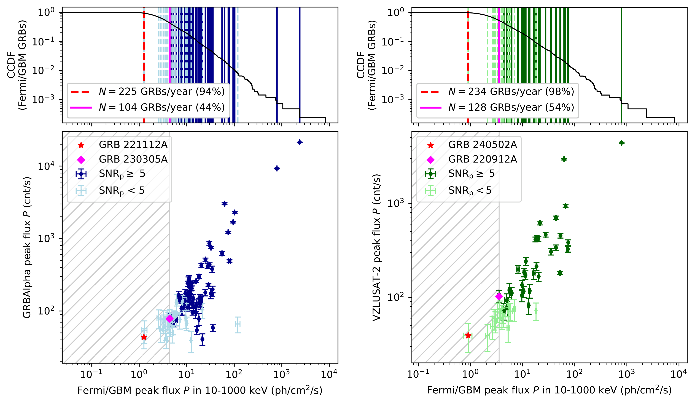
图注：Comparison of the peak flux $P$ of GRBs observed by GRBAlpha (left) and VZLUSAT-2 (right) with Fermi/GBM. \(\textit{Top:}\) Complementary cumulative distribution function of all GBM GRBs detected until 18 November 2025. The black curve marks the normalized number of GBM GRBs with $P$ higher than or equal to the given value. The solid (dashed) vertical lines represent significant (sub-threshold) detections by GRBAlpha or VZLUSAT-2. The dashed red line marks the faintest GRB from the full sample of GRBAlpha or VZLUSAT-2 GRBs. The solid magenta line is the faintest GRB out of the ones observed at a level higher than $5\sigma$. The average number of GRBs $N$ detected per year by GBM with $P$ higher than or equal to the faintest sub-threshold and significant detection by each CubeSat is stated in the legend along with the percentage of GBM GRBs this value corresponds to. \(\textit{Bottom:}\) Comparison of the peak flux measured by GRBAlpha (left) and VZLUSAT-2 (right) with Fermi/GBM. The red star highlights the faintest GRB from the full sample. The magenta diamond highlights the faintest GRB from the sample of significant GRBs ($SNR\geq5\sigma$). The gray hatched part to the left marks a region where observed GRBs are fainter than the faintest significant GRB.
对应解读：对应“与 Fermi/GBM 或其他任务交叉匹配图表”和关键图表逐图导读中的图 5；也支撑关于 5σ 显著探测阈值、GBM 峰值通量对比和样本选择函数的讨论。
入选理由：这是候选图中最直接检验 CubeSat 探测能力相对于 Fermi/GBM 的核心图。图中同时给出 GBM 峰值通量累计分布、GRBAlpha/VZLUSAT-2 的显著与次阈值探测、5σ 样本的最暗事件以及与 GBM 测得峰值通量的逐源比较，能支撑日报中关于探测率、阈值、弱事件可靠性和未探测事件选择效应的重点解读。
来源与置信度：\(arxiv_source\)；high；\(arxiv_source\) / sample631.tex:figure[11]
Fig04
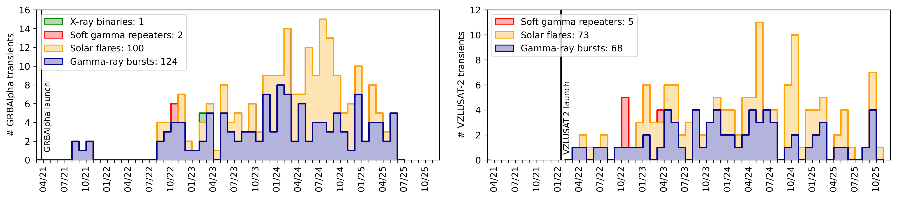
图注：Stacked bar charts showing the monthly detection rate of transients observed by GRBAlpha (top) and VZLUSAT-2 (bottom).
对应解读：对应“完整事件时间分布图”“事件分类统计图或表”，也对应关键图表逐图导读中的图 2。
入选理由：该图用堆叠柱状图展示 GRBAlpha 与 VZLUSAT-2 的逐月暂现源探测率，是判断超过 300 个事件是否长期稳定积累、是否集中在某些月份或任务阶段的关键证据。它比单个事件光变更能支撑论文的星表完整性、长期运行表现和每周探测率结论。
来源与置信度：\(arxiv_source\)；high；\(arxiv_source\) / sample631.tex:figure[4]
Fig08
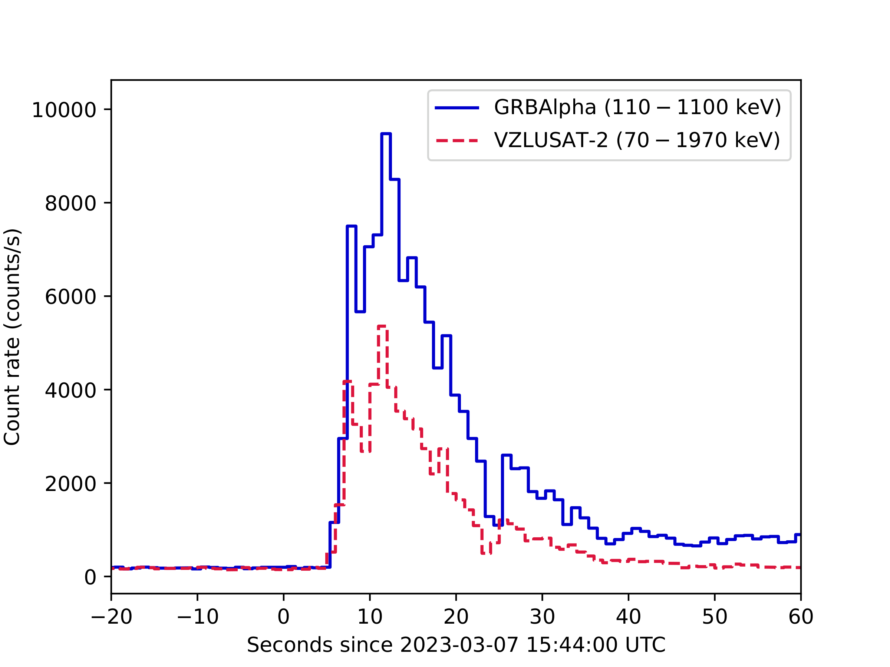
图注：Light curves of GRB 230307A observed jointly by GRBAlpha and VZLUSAT-2.
对应解读：对应“代表性光变曲线”和关键图表逐图导读中的图 3，特别是极亮 GRB 230307A 的无饱和计数曲线检查。
入选理由：GRB 230307A 是摘要中特别强调的两个极亮 GRB 之一，且该图同时给出 GRBAlpha 和 VZLUSAT-2 的联合光变曲线。它最适合检查峰值形状是否连续、是否存在削顶或饱和伪影，并展示两颗 CubeSat 对同一亮暴的独立观测一致性。
来源与置信度：\(arxiv_source\)；high；\(arxiv_source\) / sample631.tex:figure[8]
Fig12
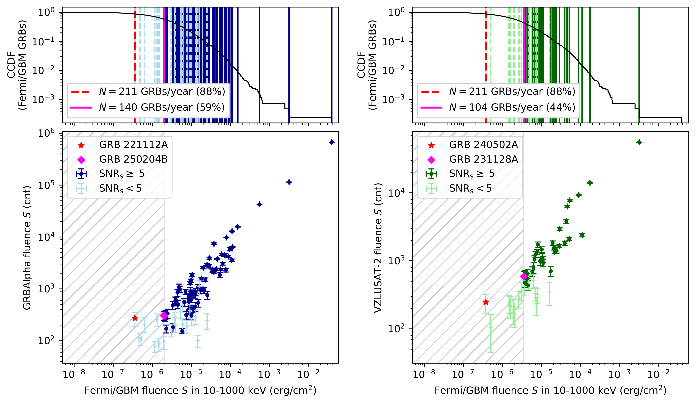
图注：Same as Fig.~\(\ref{fig:flux_gbm}\) but showing fluence $S$ instead of peak flux $P$.
对应解读：对应“与 Fermi/GBM 或其他任务交叉匹配图表”，补充关键图表逐图导读中图 5 的流量/fluence 维度。
入选理由：该图与 Fig11 类似，但比较的是 fluence 而非峰值通量，能补充判断长持续或总能量较高事件的探测选择函数。它对理解 CubeSat 样本与 GBM 样本在事件总流量上的对应关系、5σ 阈值附近的完整性以及弱事件尾部尤其有价值。
来源与置信度：\(arxiv_source\)；high；\(arxiv_source\) / sample631.tex:figure[12]
Fig05
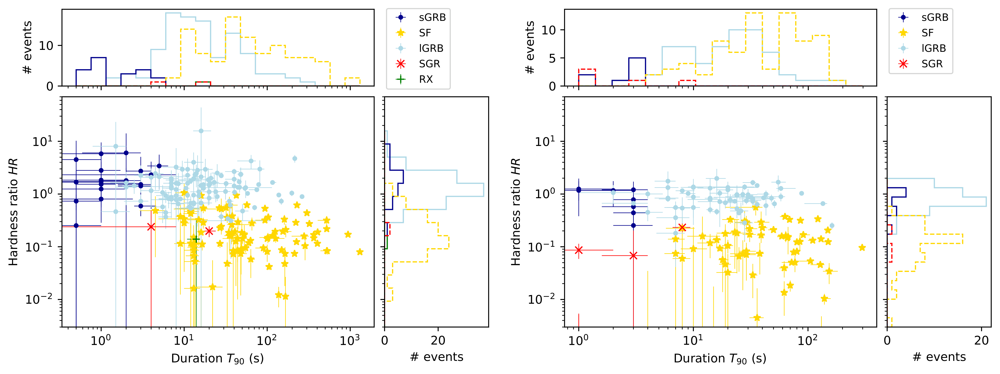
图注：Hardness ratio vs. $T_{90}$ duration of transients observed by GRBAlpha (top) and VZLUSAT-2 (bottom).
对应解读：对应“事件分类统计图或表”，以及模型拟合段落中关于持续时间、硬度比和不同暂现源分类的讨论。
入选理由：硬度比—T90 图是区分短/长 GRB、太阳耀斑和磁星短爆等类别的常用诊断平面。相比单纯列举事件数量，它能展示分类是否在物理参数空间中有可辨结构，并帮助读者判断分类是否完全依赖外部通报。
来源与置信度：\(arxiv_source\)；high；\(arxiv_source\) / sample631.tex:figure[5]
Fig02
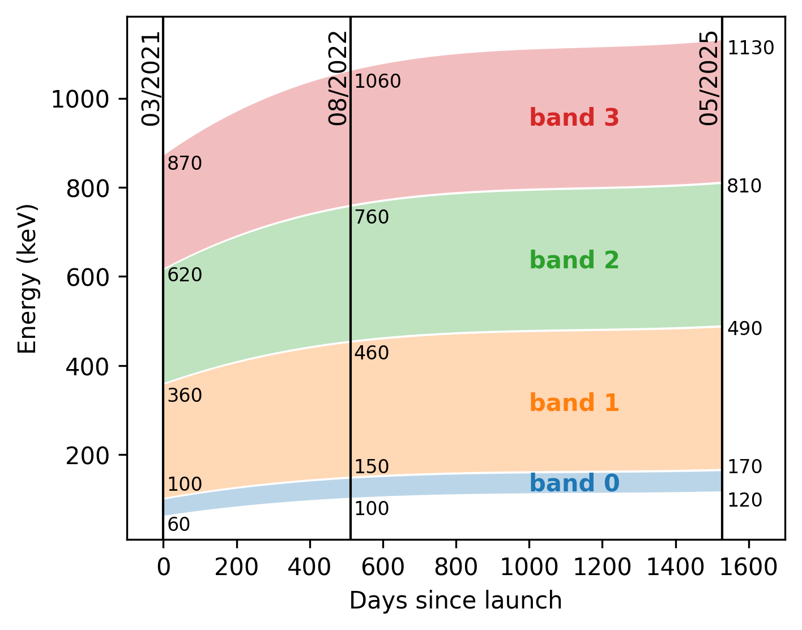
图注：Change of energy bands caused by the degradation of SiPMs on board GRBAlpha. The vertical lines show specific values at three important dates; the launch of the mission in March 2021, the beginning of regular operations in August 2022, and the end of operations in May 2025.
对应解读：对应“仪器响应或死时间诊断图”的替代性仪器系统误差检查，也关联模型拟合段落中能量响应与有效面积退化的限制。
入选理由：虽然该图不是死时间或线性响应诊断，但它直接展示 GRBAlpha 因 SiPM 退化导致的能带变化，并标出发射、常规运行开始和任务结束等关键日期。对于解释多年星表中硬度比、能量分段光变和不同阶段探测效率的系统变化很重要。
来源与置信度：\(arxiv_source\)；high；\(arxiv_source\) / sample631.tex:figure[2]
强相关工作
这篇工作应放在几个脉络中比较。第一是伽马暴全天监测星表传统，包括 BATSE、Swift/BAT、Fermi/GBM、Konus-Wind 和 INTEGRAL/SPI-ACS；这些大型或中型任务提供了伽马暴分类、持续时间分布、峰值通量、能谱和宇宙学红移研究的主样本。GRBAlpha 与 VZLUSAT-2 的价值不是替代这些任务，而是在成本、部署速度、亮端动态范围和网络节点数量上提供不同优化。检索关键词可用 “Fermi GBM GRB catalog”, “BATSE gamma-ray burst catalog”, “Konus-Wind GRB catalog”, “INTEGRAL SPI-ACS gamma-ray bursts”。
第二是 CubeSat 和小卫星高能天文学。相关任务包括 CAMELOT 概念、BurstCube、HERMES Pathfinder、GECAM 小型高能监测网络等。它们共同面对的问题是小有效面积、方向响应不足和背景复杂，但也共同受益于多节点星座和低成本部署。检索关键词可用 “CubeSat gamma-ray burst detector”, “CAMELOT nanosatellite gamma-ray bursts”, “BurstCube GRB”, “HERMES Pathfinder high-energy transients”, “GECAM gamma-ray burst”。
第三是同一事件背景。论文明确提到 GRB 221009A 和 GRB 230307A；前者是历史上最亮伽马暴之一，触发了大量关于喷流结构、TeV 辐射、尘埃散射环、电离层影响和探测器饱和的研究；后者是极亮长时标事件并与可能的紧致并合/千新星解释相关，常被用来讨论长短暴分类边界。读者若要理解本论文中“无饱和”的意义，应检索这些同一事件的多任务观测论文。
同一事件 / 同类源线索：
- https://arxiv.org/abs/2607.17971
- https://arxiv.org/pdf/2607.17971
- https://gcn.nasa.gov/circulars
- https://heasarc.gsfc.nasa.gov/W3Browse/fermi/fermigbrst.html
- https://swift.gsfc.nasa.gov/archive/grb_table/
- https://www.isdc.unige.ch/integral/science/grb
相似工作：
基础理论 / 方法工作：
- https://ui.adsabs.harvard.edu/abs/1993ApJ...413L.101M/abstract
- https://ui.adsabs.harvard.edu/abs/2004ApJ...611.1005M/abstract
- https://ui.adsabs.harvard.edu/abs/2009ApJ...702..791M/abstract
- https://ui.adsabs.harvard.edu/abs/2014ApJS..211...13V/abstract
相反观点 / 张力线索：
2. Fermi-LAT Detection of a Gamma-ray Excess toward the Radio-quiet Narrow-line Seyfert 1 Galaxy 1H 1934-063
- 来源：arXiv / astro-ph.HE
- 链接：https://arxiv.org/abs/2607.16748v1
- 作者：Yangji Li, Jinming Bai, Xiong Jiang, Kaixing Lu
- 评分：novelty 7/10，importance 7/10，relevance 10/10，final 9.05/10
- 推荐理由：Fermi-LAT GeV 伽马射线候选探测，目标为罕见的 radio-quiet NLS1，属于高优先级伽马射线天文；尽管仅约5.2σ且缺少同时多波段约束，仍值得关注。
中文题目：费米 LAT 在射电宁静窄线 Seyfert 1 星系 1H 1934-063 方向探测到 GeV 伽马射线超出
做了什么：这篇文章用 Fermi-LAT 约 16 年数据，并采用 LAT 16 年源表背景模型，重新检查射电宁静窄线 Seyfert 1 星系 1H 1934-063 方向的高能伽马射线信号。作者在一个耀发时段内，于 \(1\text{--}500\,\mathrm{GeV}\) 能段发现测试统计量 \(\mathrm{TS}=27.12\)，约等于 \(5.2\sigma\) 的伽马射线超出；拟合光子流量为 \((4.94\pm2.33)\times10^{-10}\,\mathrm{ph\,cm^{-2}\,s^{-1}}\)，光子谱指数很硬，\(\Gamma=1.50\pm0.25\)。最佳定位与 1H 1934-063 的射电位置相容，而附近源 FL16Y J1936.9-0552 在同一时段不显著。由于缺少同时段多波段观测，作者没有声称唯一物理机制，只指出紧致非热成分可以解释硬 GeV 辐射。
为什么重要：如果这个信号确实来自 1H 1934-063，它会扩大伽马射线窄线 Seyfert 1 星系的参数空间：过去 Fermi 探测到的伽马射线 NLS1 多数有明显射电喷流或射电响亮特征，而 1H 1934-063 被归为射电宁静源。射电宁静活动星系核能否偶发产生可被 LAT 看到的 GeV 非热辐射，关系到低质量黑洞、高吸积率系统是否也能产生短暂相对论外流、磁重联区或紧致日冕粒子加速。
理论 / 观测 / 仪器方法价值：对观测而言，本文的价值在于给出一个可复查的 LAT 弱瞬变候选案例：它明确使用最新长期源表、比较邻近背景源、报告定位、谱指数、流量和 \(\mathrm{TS}\)。对方法而言，它提醒读者，在拥挤区域、低光子数和长时间基线下，源表更新、时间窗选择和背景源处理会直接影响弱源显著性。对理论而言，它不是建立新模型，而是给射电宁静 NLS1 的高能活动模型提供一个需要后续多波段验证的约束点。
为什么应该关注：你应该关注它，不是因为它已经证明射电宁静 NLS1 都会发 GeV 伽马射线，而是因为它处在一个容易产生新物理也容易产生统计陷阱的边界上：\(\sim5\sigma\) 的时段信号、很硬的 \(\Gamma\)、邻近 LAT 源、缺少同时多波段数据，这些因素共同决定了它既值得跟进，也必须谨慎解读。若后续在 X 射线、光学偏振、射电 VLBI 或 LAT 新数据中找到同相活动，它会成为研究弱喷流或紧致非热日冕的重要样本；若不能复现，它也会成为 LAT 弱瞬变分析中选择效应和后验试验数的好教材。
展开详细解读：文章讲解、背景、理论、重点章节、图表与相关工作
文章详细讲解
科学问题：窄线 Seyfert 1 星系通常被认为拥有相对较低质量的超大质量黑洞、较高的 Eddington 比，并表现出快速 X 射线变率和强 Fe II 光学发射。少数 NLS1 已被 Fermi-LAT 探测到 GeV 伽马射线，通常解释为朝向视线的相对论喷流辐射。但 1H 1934-063 是射电宁静 NLS1；如果它也能产生显著 GeV 超出，就会挑战“强 GeV 辐射必须伴随射电响亮喷流”的简单图像，或者至少说明射电宁静分类并不排除短时、低占空比的高能粒子加速。
作者怎么做：论文使用 Fermi-LAT 长时间数据，并把 LAT 16 年源表，即 FL16Y，纳入背景模型。核心不是在整段 16 年数据里寻找稳定源，而是在耀发时间窗中检查 1H 1934-063 方向是否存在显著超出。作者在 \(1\text{--}500\,\mathrm{GeV}\) 能段做似然分析，报告 \(\mathrm{TS}=27.12\)，对应约 \(5.2\sigma\)。他们同时检查最佳拟合位置是否与 1H 1934-063 的射电坐标一致，并测试附近 FL16Y 源 FL16Y J1936.9-0552 在同一时段是否可能解释该信号。
关键结果：耀发时间窗中的超出具有较硬谱，光子指数 \(\Gamma=1.50\pm0.25\)，光子流量 \((4.94\pm2.33)\times10^{-10}\,\mathrm{ph\,cm^{-2}\,s^{-1}}\)。硬谱在 LAT 弱源分析中很关键，因为高能光子的点扩散函数更窄、银河弥散背景相对较低，定位和源混淆问题通常比低能端更可控。作者发现最佳伽马射线位置与 1H 1934-063 的射电位置相容，而附近源在同一时间窗并不显著，因此倾向于把超出与 1H 1934-063 联系起来。
局限和下一步：本文最重要的限制是缺乏同时段多波段数据。没有同步 X 射线、紫外、光学、射电或偏振信息，就很难区分喷流同步自康普顿、外康普顿、紧致日冕非热尾、磁重联或背景源涨落等解释。另一个限制是瞬变搜索的后验试验数：如果时间窗是在数据中寻找出来的，名义 \(\mathrm{TS}\) 显著性不一定等于全局显著性。下一步应包括用更新的 LAT 事件重分析、不同能量阈值和 ROI 设置的稳健性测试、检查未建模瞬变源，以及开展同时多波段监测。
关键结果是怎么做出来的
数据和样本选择方面，本文聚焦一个已知射电宁静 NLS1，即 1H 1934-063，而不是从全天盲搜一批 NLS1。作者使用 Fermi-LAT 长基线数据，并把 FL16Y 源表纳入模型，这一点对该结果很重要：LAT 弱源分析中，附近源、银河弥散背景和各向同性背景若没有被合适建模，会把残差误认为目标源。论文特别指出附近 FL16Y J1936.9-0552 在同一耀发时间窗不显著，这是排除源混淆的关键证据之一。
事件数没有在摘要中给出，但结果是通过标准 LAT binned 或 unbinned likelihood 框架得到的，核心检验量是 \(\mathrm{TS}=2\Delta\ln\mathcal{L}\)。在单个新增点源、谱形参数固定或近似固定时，\(\sqrt{\mathrm{TS}}\) 常被用作近似局部显著性；这里 \(\mathrm{TS}=27.12\) 对应约 \(5.2\sigma\)。需要注意的是，这通常是局部显著性；若耀发区间、能段或源位置经过多次尝试，严格全局显著性应乘以相应试验因子或通过模拟估计。
模型比较主要体现在“有目标源”和“无目标源”两种似然之间，以及目标源与附近 FL16Y 源的相对贡献。目标源采用幂律谱，拟合得到 \(\Gamma=1.50\pm0.25\)。这么硬的谱使信号更不容易完全由低能弥散背景误建模造成，但也会让结果对少数高能光子的权重很敏感。读者应重点看论文中的 \(\mathrm{TS}\) map、定位置信区、光变曲线和谱能量分布点：它们共同决定“这是一个位置上、时间上、谱上都合理的点源瞬变”，还是一个由少数事件驱动的统计波动。
支撑结论的图表应包括耀发时段的残差或 \(\mathrm{TS}\) 图、目标区域模型图、光变曲线、谱拟合图，以及目标源和邻近源的 \(\mathrm{TS}\) 对比表。最关键的稳健性检查是改变能量下限，例如比较 \(0.1\text{--}500\,\mathrm{GeV}\)、\(0.5\text{--}500\,\mathrm{GeV}\) 与 \(1\text{--}500\,\mathrm{GeV}\)；改变 ROI 半径；固定或释放邻近源谱参数；替换弥散背景模板；检查太阳、月球、地球边缘和亮伽马射线源附近观测几何是否异常。
系统误差方面，最主要的不是 LAT 有效面积本身，而是低光子数情形下的背景模型和时间窗选择。若耀发时间窗是在多种 binning 下筛选出来的，则需要通过空场模拟或同类 NLS1 样本的“假目标”分析估计假阳性率。作者谨慎地说“不能给出唯一物理解释”，这是合理的：统计关联和物理归因是两步，前者由 \(\mathrm{TS}\)、定位和邻源排除支撑，后者需要多波段关联、变率尺度和能量预算共同约束。
展开背景、理论、公式、模型、章节和图表导读
背景知识
NLS1 是活动星系核中的一个特殊子类，典型光学特征包括较窄的宽线区 Balmer 线、强 Fe II 发射和较弱的 [O III]。传统解释认为它们的黑洞质量相对较低、吸积率较高，因此常被视为年轻或快速增长的 AGN。1H 1934-063 属于这一类，并且通常被归为射电宁静源，这使它与经典 blazar 和射电响亮 NLS1 有明显区别。
Fermi-LAT 发现少数 NLS1 有 GeV 伽马射线辐射后，领域内出现了一个长期问题：NLS1 是否能像 blazar 那样发射相对论喷流？已知伽马射线 NLS1 往往有高亮温度、平坦射电谱、射电变率或 VLBI 紧致核，因此喷流解释很自然。但射电宁静 NLS1 的情况更微妙，因为它们缺少强射电喷流的直接证据；若出现 GeV 辐射，就必须考虑弱喷流、短暂喷流、磁重联加速、日冕非热电子或源混淆等可能性。
为什么现在值得重新看？一方面，Fermi-LAT 的时间基线已经很长，弱源和低占空比瞬变的统计量随曝光累积而改善。另一方面，LAT 源表不断更新，新的 FL16Y 背景模型可以减少把邻近源或未建模源误认为目标的风险。对于 NLS1 这类可能低占空比的源，整段时间平均信号可能不显著，但短时段耀发可能达到可探测水平。
该领域常见误区之一是把“射电宁静”等同于“无喷流”。射电宁静只是在某种射电到光学比值、射电功率或形态标准下的分类，并不排除弱小尺度喷流或短暂外流。另一个误区是把 LAT 的 \(\mathrm{TS}\) 直接等同于物理发现的确定性；在后验时间窗、多能段尝试和复杂背景下，局部显著性需要和全局假阳性率区分。第三个误区是看到硬 GeV 谱就立即归因于喷流，实际上紧致日冕或磁重联区也可能产生非热高能尾，只是需要满足伽马射线逃逸和能量预算条件。
基础理论 / 方法脉络
从物理图像看，GeV 伽马射线通常需要相对论粒子。电子可以通过逆康普顿散射把低能光子升能到 GeV；强子模型也可通过 \(pp\) 或 \(p\gamma\) 相互作用产生 \(\pi^0\) 衰变伽马射线。对于 AGN，若存在相对论喷流，观测到的通量会被 Doppler 增亮；若辐射来自日冕或磁重联区，则几何更紧凑，伽马射线可能受到内部 \(\gamma\gamma\) 吸收限制。
本文实际采用的观测模型是 LAT 点源似然分析，而不是详细辐射输运模型。目标源的光子谱被近似为幂律，关键参数是归一化和光子指数 \(\Gamma\)。\(\Gamma\) 越小，谱越硬；本文的 \(\Gamma=1.50\pm0.25\) 表明高能端相对强，这对定位和背景区分有利，但也意味着少数高能光子可能对拟合产生较大影响。
LAT 分析的关键观测量不是“图片上看见一个点”，而是每个事件的能量、方向、时间以及仪器响应函数共同给出的似然。仪器响应包括有效面积、点扩散函数和能量弥散。模型中还必须包含银河弥散辐射、各向同性背景和 ROI 内已知源。对于弱瞬变，释放哪些邻近源参数、是否固定远处源、能量下限如何选择，都会影响 \(\mathrm{TS}\) 和定位。
常见退化关系包括目标源与邻近点源的空间退化、目标硬谱与弥散背景谱形误差的退化、短时间窗中流量与谱指数的退化，以及局部显著性与时间窗选择的退化。本文通过检查最佳位置与 1H 1934-063 射电坐标的一致性、确认附近 FL16Y J1936.9-0552 同时段不显著，来缓解源混淆问题；但缺少多波段同步数据使物理模型之间仍高度退化。
公式与推导
第一步，把目标源的 LAT 光子谱写成幂律：
这里 \(dN/dE\) 是单位能量光子流量，\(N_0\) 是在标度能量 \(E_0\) 处的归一化，\(\Gamma\) 是光子指数。本文报告 \(\Gamma=1.50\pm0.25\)，说明候选源在 GeV 能段较硬。
第二步，由谱得到积分光子流量：
本文的能段是 \(E_1=1\,\mathrm{GeV}\)、\(E_2=500\,\mathrm{GeV}\)，拟合得到 \(F_{1,500}\approx4.94\times10^{-10}\,\mathrm{ph\,cm^{-2}\,s^{-1}}\)。
第三步，若需要估计能量通量，可计算：
\(S_{E_1,E_2}\) 可进一步用于估算各向同性伽马射线光度，但需要红移和宇宙学参数。
第四步，LAT 观测到的期望计数不是简单通量乘时间，而要卷积仪器响应：
这里 \(\mu_i\) 是第 \(i\) 个空间或能量 bin 的模型计数，\(A_{\rm eff}\) 是有效面积，\(P_i\) 表示点扩散函数和 bin 接收概率，\(\mu_{i,\rm bkg}\) 是弥散背景和其他源贡献。
第五步，标准 Poisson 似然为：
这里 \(n_i\) 是观测计数。弱源探测的核心是比较含目标源模型与不含目标源模型的 \(\ln\mathcal{L}\)。
第六步，测试统计量定义为：
\(\hat{\theta}_{\rm src}\) 是目标源参数的最大似然估计，\(\theta_{\rm src}=0\) 表示没有该源。本文得到 \(\mathrm{TS}=27.12\)，是探测主张的统计核心。
第七步，在正则条件近似成立且试验数未计入时，局部显著性常估为：
因而 \(\sqrt{27.12}\simeq5.2\)，对应论文给出的 \(\sim5.2\sigma\)。但如果时间窗和能段是后验选择的，全局显著性应小于该值。
第八步，定位可近似由似然曲面给出：
这里 \((\alpha,\delta)\) 是试探源位置。若 1H 1934-063 的射电坐标落在合适的 \(\Delta\mathrm{TS}\) 置信区域内，定位就与关联解释相容。
第九步，若考虑紧致区内伽马射线逃逸，需要检查 \(\gamma\gamma\) 吸收的量级：
这里 \(n_{\rm ph}\) 是靶光子数密度，\(\sigma_{\gamma\gamma}\) 是对产生截面，\(R\) 是辐射区尺度。若 \(\tau_{\gamma\gamma}\gtrsim1\)，GeV 光子会被显著吸收；因此任何紧致非热模型都必须满足足够低的内部吸收或有 Doppler 增亮。
第十步，变率可给辐射区大小上限：
这里 \(c\) 是光速，\(\delta\) 是 Doppler 因子，\(t_{\rm var}\) 是观测变率时间尺度，\(z\) 是红移。本文缺少同时多波段和强约束变率信息，因此这一步目前主要说明后续观测如何把统计探测转化为物理约束。
模型拟合 / 应用方法
本文的核心拟合是 LAT 似然拟合。目标源通常被建模为点源幂律谱，拟合量包括归一化、光子指数 \(\Gamma\)、积分通量以及位置或位置相关的 \(\mathrm{TS}\) 分布。背景模型包括银河弥散模板、各向同性模板、ROI 内 FL16Y 源，以及可能需要释放参数的邻近亮源。对于一个弱瞬变，背景模型选择往往和目标源参数同等重要。
统计量方面，作者用 \(\mathrm{TS}\) 衡量新增源的必要性。读者应把 \(\mathrm{TS}=27.12\) 理解为“在给定模型、给定时间窗、给定能段下，加入目标源显著改善似然”，而不是自动等于全天全时盲搜后的全局 \(5.2\sigma\)。若时间窗来自光变曲线筛选，严格拟合应报告 trials correction；若没有报告，读者应在心里降低物理发现的确定性。
参数退化主要有三类。第一是通量与谱指数退化：弱源高能光子少，\(\Gamma\) 变硬会改变积分通量对高能事件的权重。第二是目标源与邻近源退化：LAT 点扩散函数在低能较宽，附近 FL16Y J1936.9-0552 若建模不当，可能泄漏到目标方向。第三是源项与弥散背景退化：银河弥散模型局部残差会影响低能段，因此本文选择 \(1\,\mathrm{GeV}\) 以上能段有助于降低这种系统误差。
残差诊断应重点看 \(\mathrm{TS}\) map 和 residual map。如果加入 1H 1934-063 后，目标附近残差明显消失，而其他位置没有同等级未建模峰值，则点源解释更可信。若残差呈扩展状、沿银河弥散结构分布，或峰值位置随能量阈值变化明显，则需要怀疑背景误建模或少数事件驱动。
模型可能失败的方式也很明确：耀发时间窗可能是后验挑选造成的统计峰；邻近源可能在源表平均模型下不显著但短时变亮；未收录瞬变源可能位于误差椭圆内；太阳和月球伽马射线、地球边缘污染或数据质量切选可能影响少数高能事件。实际应用上，这篇论文提供了一个后续监测目标：若未来 LAT 或 CTA 类仪器、X 射线望远镜、光学巡天和射电 VLBI 捕捉到同源活动，就能把目前的统计候选提升为物理样本。
重点章节 / 结果段落怎么读
数据/样本部分应先看作者如何定义 Fermi-LAT 数据集：事件类别、能量范围、ROI 半径、天顶角切选、时间范围和采用的 FL16Y 源表。对弱源而言，这些技术选择直接决定背景和点扩散函数，不是可跳过的细节。
方法部分重点看似然模型：哪些邻近源参数被释放，哪些被固定；银河弥散和各向同性模板是什么；1H 1934-063 是否先固定在射电位置，还是允许重新定位；耀发时间窗如何确定。若时间窗来自搜索，读者应额外关注是否讨论了试验因子。
主结果部分应围绕 \(1\text{--}500\,\mathrm{GeV}\) 的 \(\mathrm{TS}=27.12\)、\(F=(4.94\pm2.33)\times10^{-10}\,\mathrm{ph\,cm^{-2}\,s^{-1}}\) 和 \(\Gamma=1.50\pm0.25\) 阅读。这里要同时检查统计误差、谱形、定位图和邻近源对比，而不要只看显著性数字。
讨论部分应看作者如何处理物理解释的不确定性。由于没有同时多波段数据，喷流、紧致非热日冕或其他非热成分都不能被唯一确定。好的讨论应该给出能量预算和辐射区约束的方向，而不是过度声称“射电宁静源已被证明有强喷流”。
附录或稳健性检验若存在，应优先阅读。尤其要看不同能量下限、不同背景模型、不同时间 bin、邻近源释放策略和定位误差估计是否改变结论。对 \(\sim5\sigma\) 弱瞬变候选，这些稳健性检验通常比多写一个辐射模型更有价值。
建议重点查看的图表
-
\(\mathrm{TS}\) map 或 residual map：看峰值是否位于 1H 1934-063 附近，加入目标源后残差是否消失，以及附近是否有同等级未建模峰。
-
定位置信区域图：看最佳拟合伽马射线位置、\(68\%\) 或 \(95\%\) 误差圈、1H 1934-063 射电坐标和 FL16Y J1936.9-0552 的相对位置。
-
光变曲线：看耀发时间窗如何定义，耀发是否由单个时间 bin 驱动，非耀发时段是否只有上限，以及是否存在 look-elsewhere 问题。
-
谱能量分布或能量分 bin \(\mathrm{TS}\)：看硬谱是否由多个能量 bin 支撑，还是由少数最高能事件决定。
-
邻近源对比表：看 FL16Y J1936.9-0552 在同一时段的 \(\mathrm{TS}\)、流量上限和谱参数，判断源混淆是否充分排除。
-
系统误差或稳健性表：看改变能量阈值、ROI、背景源参数释放策略和弥散模型后，目标源 \(\mathrm{TS}\) 是否稳定。
关键图表逐图导读
图 1：建议把它当作区域示意图或 \(\mathrm{TS}\) map 来读。横纵轴通常是赤经和赤纬，颜色代表 \(\mathrm{TS}\) 或残差强度，标记点应包括 1H 1934-063 的射电位置和附近 FL16Y 源。关键是看 \(\mathrm{TS}\) 峰是否与目标源重合，以及峰形是否像点源。读图陷阱是只看颜色峰值而忽略 LAT 点扩散函数随能量变化；低能事件会让位置误差显著变大。
图 2：若论文给出定位置信图，应检查坐标轴上的误差圈与源间角距。模型线或等值线通常对应 \(\Delta\mathrm{TS}\) 的置信区域。主要结论应是 1H 1934-063 在合理置信区域内，而 FL16Y J1936.9-0552 不能自然解释同一超出。读图陷阱是把 \(95\%\) 误差圈内的所有天体都当作等概率对应体；真正的关联还要看时变、谱形和多波段信息。
图 3：光变曲线通常以时间为横轴，光子流量或 \(\mathrm{TS}\) 为纵轴，上限用箭头表示。应看耀发是否显著高于基线，是否只有一个 bin，是否与太阳/月球或观测曝光异常相关。若只有一个 bin 贡献主要 \(\mathrm{TS}\)，物理解释要更谨慎；若相邻多个 bin 都有提高，则瞬变更可信。
图 4：谱图或 SED 图通常以能量为横轴，以 \(E^2dN/dE\) 或分 bin 流量为纵轴，幂律模型为直线或曲线。本文的硬谱意味着高能端不会快速下降。应看每个能量 bin 的误差棒和上限，确认 \(\Gamma=1.50\) 是否由多个 bin 支撑。读图陷阱是忽略能量 bin 之间不是独立物理测量，而是同一似然模型下的统计分解。
图 5：若有模型比较或邻近源表，应重点看目标源与 FL16Y J1936.9-0552 在同一时间窗的 \(\mathrm{TS}\)、流量和谱指数。主要结论是附近源没有显著探测，因此不能轻易把超出归因于该源。读表陷阱是忽略邻近源参数固定/释放方式；固定平均谱可能低估短时变源对残差的贡献。
图 6：若有稳健性检验图，应比较不同能量下限、不同 ROI 或不同背景设置下的 \(\mathrm{TS}\) 和位置。一个可信结果应在合理设置变化下保持在目标附近，并且显著性不应完全依赖单一任意选择。
论文原图 / 可嵌入图片
Fig02
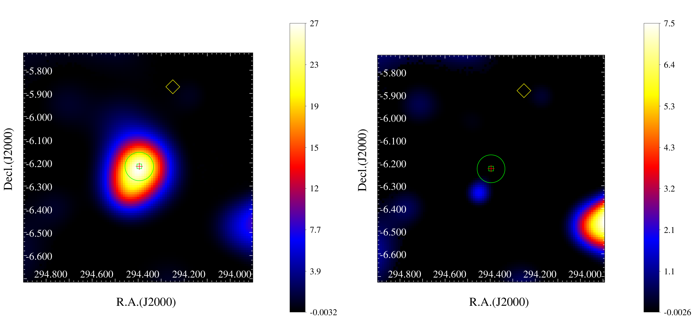
图注：TS map (left) and residual map (right) in the 1--500 GeV band for the flare interval MJD 58788--59031. The green circle shows the 95\% statistical localization region centered on the best-fit $\gamma$-ray position of the excess. The red cross and green box indicate the optical and radio positions of 1H 1934--063, respectively, while the yellow diamond marks the nearby source FL16Y J1936.9--0552.
对应解读：对应“建议重点查看的图表”中的 TS map/residual map 与定位置信区域图，也对应“关键图表逐图导读”中关于图 1、图 2 以及模型拟合段落的残差诊断。
入选理由：这是检验本文核心结论最关键的图：同时给出耀发时段 1--500 GeV 的 TS map、residual map、95% 定位区域、1H 1934-063 的光学/射电位置以及邻近源 FL16Y J1936.9-0552 的位置。它直接回答伽马射线峰是否与目标源重合、加入源模型后残差是否消失、附近 FL16Y 源是否可能造成混淆等核心问题，科学支撑度最高。
来源与置信度：\(arxiv_source\)；high；\(arxiv_source\) / \(Paper_1934_arXiv.tex\):figure[2]
Fig01
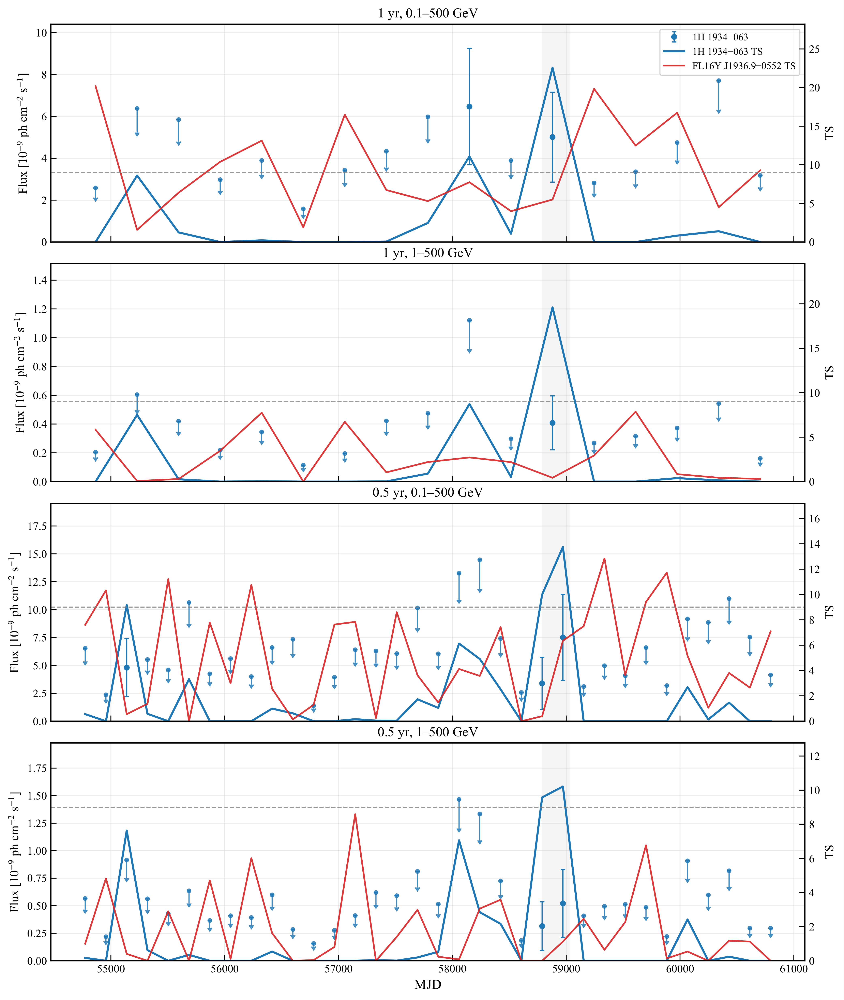
图注：\(\textit{Fermi}-LAT\) light curves of 1H 1934--063 obtained with the FL16Y source model. The panels compare different energy ranges and temporal binnings, as labeled. Blue points and arrows denote the photon fluxes and 95\% upper limits of 1H 1934--063, while the blue and red curves show the TS values of 1H 1934--063 and FL16Y J1936.9--0552, respectively. Upper limits are shown for bins with TS $<9$. The dashed line marks TS = 9, and the gray shaded region indicates the flare interval MJD 58788--59031.
对应解读：对应“建议重点查看的图表”中的光变曲线与邻近源对比，也对应“关键图表逐图导读”中关于耀发时间窗、单个时间 bin 驱动、上限和 FL16Y J1936.9-0552 同期 TS 的讨论。
入选理由：该图展示不同能段和时间分箱下 1H 1934-063 的流量、上限与 TS，并同时给出邻近源 FL16Y J1936.9-0552 的 TS 曲线。灰色阴影直接标出论文采用的耀发区间 MJD 58788--59031，因此最适合检查时间窗是否后验选择、耀发是否由少数 bin 驱动，以及邻近源在同一时段是否显著。
来源与置信度：\(arxiv_source\)；high；\(arxiv_source\) / \(Paper_1934_arXiv.tex\):figure[1]
Fig04
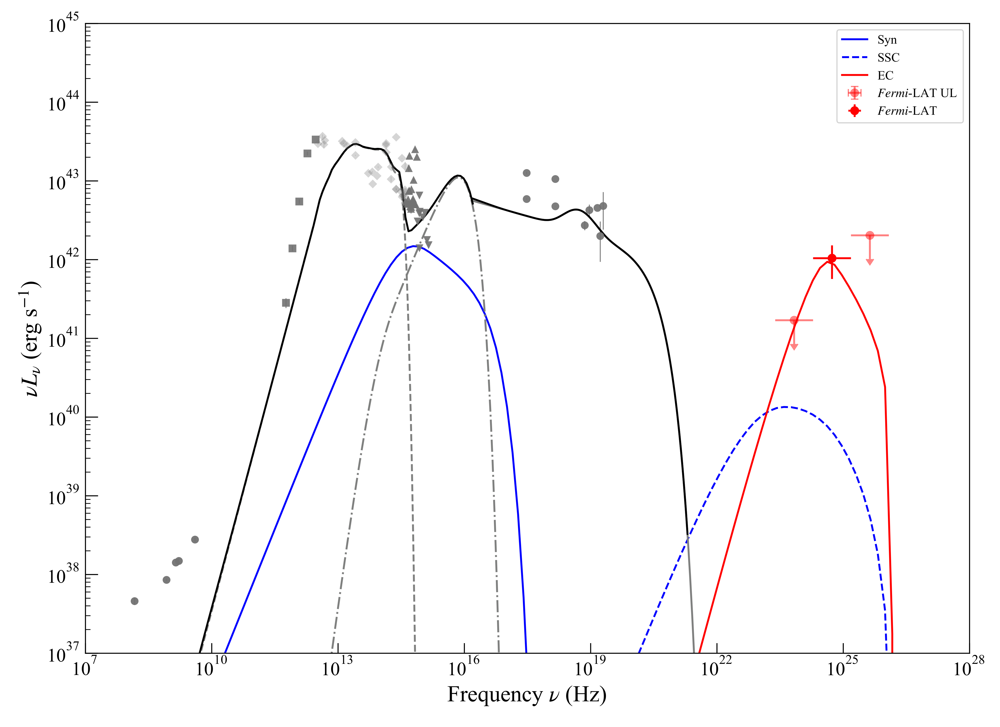
图注：Non-simultaneous broadband spectral energy distribution of 1H 1934$-$063. The gray points show archival radio-to-X-ray measurements compiled from the literature and public catalogs \(\citep{deGasperin2018SpecIndex,Franzen2021GLEAM,Mahony2010RASS6dFGS,Duchesne2025RACSHigh,Gordon2021VLASS,Ichikawa2019BASSXI,Melendez2014HerschelBAT,Abrahamyan2015IRASPSCFSC,Mauch2007SixdFGSRadio,Nagao2001OIII,Asmus2020LASr,Ishihara2010AKARI,Teplitz2010SpitzerSourceList,McMahon2013VHS,Hon2025BLAGN6dFGS,Cutri2003TwoMASS,Magnier2020PS1,Wolf2018SkyMapperDR1,Lasker2008GSC,Gaia2018DR2,Gaia2021EDR3,Gaia2023DR3,Henden2016APASS,Altmann2017HSOY,Stassun2018TIC,Page2012XMMSUSS,Chen2018South,Yershov2014UVSourceCatalogues,Boissay2016SoftExcess,Rodriguez2008IntegralSwift,Bird2007IBIS,Sazonov2007IntegralAGN,Malizia2009ComptonThick,Beckmann2006IntegralAGN,Cusumano2010BAT54m}\); The red symbols denote the \(\textit{Fermi}-LAT\) detections and 95\% upper limits during the flare interval. The blue solid, blue dashed, and red solid curves show representative synchrotron, SSC, and EC components, respectively, while the black curve represents the phenomenological thermal contribution. The model curves are intended as an illustrative broadband representation rather than a unique physical fit.
对应解读：对应“建议重点查看的图表”中的谱能量分布或能量分 bin TS，也对应“关键图表逐图导读”中关于硬谱、LAT 分能段探测/上限以及 SSC/EC 宽带解释的讨论。
入选理由：该图把耀发期 Fermi-LAT 探测点和 95% 上限放入非同时多波段 SED 中，并叠加同步辐射、SSC、EC 和热成分的代表性模型曲线。它不能给出唯一物理解释，但非常适合展示硬 GeV 成分在宽带能谱中的位置，并提醒读者本文的宽带模型只是示意而非强约束拟合。
来源与置信度：\(arxiv_source\)；high；\(arxiv_source\) / \(Paper_1934_arXiv.tex\):figure[4]
强相关工作
同类工作首先是 Fermi-LAT 对伽马射线 NLS1 的发现和后续样本研究，典型对象包括 PMN J0948+0022、SBS 0846+513、1H 0323+342 等。这些源通常是射电响亮或至少有明显喷流迹象，因此与 1H 1934-063 的“射电宁静”身份形成对照。建议检索关键词包括 “gamma-ray narrow-line Seyfert 1 Fermi LAT”, “radio-quiet NLS1 gamma rays”, “PMN J0948+0022 Fermi LAT”, “1H 0323+342 gamma-ray NLS1”。
基础背景应联系 NLS1 的光学分类、黑洞质量和高吸积率问题，以及 LAT 源表和弱源似然分析方法。相反或有张力的观点包括：伽马射线 NLS1 是否只是误分类的低功率 blazar；射电宁静 AGN 的 GeV 信号是否可能来自未分辨背景源；以及短时段 \(\mathrm{TS}\) 峰是否受后验搜索影响。建议检索关键词包括 “Fermi LAT weak source trials factor”, “AGN corona nonthermal gamma rays”, “radio quiet AGN gamma-ray emission”, “NLS1 relativistic jet review”。
同一事件 / 同类源线索：
相似工作：
基础理论 / 方法工作：
相反观点 / 张力线索：
（未提供）
补充推荐：近期/较早未读论文（非今日论文）
1. A cosmic-ray loaded nascent outflow driven by a massive star cluster
- 来源：arXiv / astro-ph.HE
- 链接：https://arxiv.org/abs/2607.15797v1
- 作者：Marianne Lemoine-Goumard, Lucia Härer, Lars Mohrmann, Romain Bernet, Jim Hinton, Giada Peron, Brian Reville, Luigi Tibaldo
- 类型：补充推荐（近期/较早未读，非今日每日论文）
- 评分：novelty 9/10，importance 9/10，relevance 10/10，final 10.00/10
- 推荐理由：Very high-priority cosmic-ray and gamma-ray result: discovery of a cosmic-ray-loaded outflow from Westerlund 1 using GeV/TeV emission and HI morphology. Direct implications for cosmic-ray acceleration, transport, and star-cluster feedback.
中文题目：由大质量星团驱动、富含宇宙线的新生外流
做了什么：这篇论文报告了银河系大质量年轻星团 Westerlund 1 附近一个可能正在形成的、携带宇宙线的外流结构。作者把 GeV 伽马射线、TeV 伽马射线和中性氢 21 cm 空腔放在一起比较：GeV 辐射与一个从银盘伸出的 H I 空腔相重合，TeV 辐射则更靠近星团周围，但二者在空间和能谱上连续相接。论文的核心解释是：Westerlund 1 加速的非热粒子正在从银盘逸出，GeV 辐射主要追踪相对论电子进入空腔或外流底部，而伴随注入的质子和原子核能量密度可能比一般星际介质高至少一个数量级，足以反过来影响外流动力学。
为什么重要：宇宙线常被认为能驱动星系风、调节恒星形成并把能量和磁场输运到星系晕，但直接看到“携带宇宙线的外流”并不容易。Westerlund 1 是银河系内少数能在较高空间分辨率下研究这种过程的近邻实验室：如果这篇论文的解释成立，它把星团尺度的粒子加速、伽马射线辐射、H I 气体结构和银河盘—晕输运联系到了一起。
理论 / 观测 / 仪器方法价值：对理论而言，它给星团风、宇宙线反馈和各向异性扩散模型提供了一个可检验案例；对观测而言，它强调不能只看 TeV 源或 GeV 源的形态，而要联合气体模板、能谱连续性和多波段形态偏移；对方法而言，它展示了如何用 Fermi-LAT 的 GeV 数据、地面切伦科夫望远镜的 TeV 数据和 H I 速度结构共同识别年轻外流。
为什么应该关注：你应该关注它，因为这不是又一个“发现一个扩展伽马射线源”的结果，而是在问一个更基本的问题：大质量星团是否像小型星暴区一样，把新鲜加速的宇宙线直接注入银河晕？如果答案是肯定的，银河系宇宙线源项、盘—晕边界条件、星团反馈效率和未来 CTA/LHAASO/SKA 跟进观测的优先级都会受到影响。
展开详细解读：文章讲解、背景、理论、重点章节、图表与相关工作
文章详细讲解
科学问题：论文要解决的是宇宙线是否能在年轻大质量星团附近形成可观测的、动力学上重要的外流。传统图像中，超新星遗迹是银河宇宙线的主要加速器；但近年越来越多 GeV 和 TeV 观测显示，OB 星协和年轻大质量星团周围存在尺度达几十到上百 pc 的硬谱伽马射线辐射。问题不只是“星团能不能加速粒子”，而是这些粒子是否被困在局部，还是正在随星团风、湍流和磁场结构离开银盘，成为银河晕宇宙线的一部分。
作者怎么做：作者围绕 Westerlund 1 进行多波段空间—谱分析。论文摘要说明，他们发现 GeV 伽马射线辐射与一个在原子氢中可见的空腔相重合，该空腔像是粒子和热气体从银河盘向外冒出的通道。与此同时，TeV 伽马射线辐射包围星团，但与 GeV 辐射有位置偏移；关键不是把二者视为无关源，而是检查二者是否在谱形和空间上平滑连接。这个策略直接针对常见误判：扩展伽马射线源附近往往有复杂弥散背景、未解析源和气体结构，单波段形态很难证明外流。
关键结果：论文声称 GeV 辐射追踪的是一群正在从银盘冒出的相对论电子，而 TeV 辐射则与星团附近更高能粒子或更靠近加速区的成分相关。若采用标准非热电子与质子的注入比例，伴随电子共同加速的质子和原子核的能量密度至少比一般星际介质宇宙线能量密度高一个数量级。这一点很重要：如果只是辐射可见但能量密度很低，它只是示踪剂；若宇宙线压强达到或超过局部热压、磁压或湍动压的相当比例，它们就可能参与外流驱动。
局限和下一步：从摘要能看出，解释依赖多项假设，包括电子/质子注入效率、伽马射线辐射机制、三维几何、背景弥散模型和 H I 速度—距离对应。GeV 辐射若来自逆康普顿散射，目标光场与电子冷却会影响能谱；若有强子成分，气体密度模板和未解析分子气体会改变能量预算。下一步应包括更高分辨率 TeV 形态、低频射电同步辐射搜寻、H I 与 CO 的三维气体建模、X 射线热等离子体约束，以及用时间无关或时间相关输运模型同时拟合 GeV—TeV 光谱和外流几何。
关键结果是怎么做出来的
本文最重要的证据链从样本选择开始：作者没有做一个大样本统计，而是聚焦于 Westerlund 1 这个单一但物理上很有代表性的年轻大质量星团。它位于银河盘内、已知拥有强恒星风和大量大质量恒星演化产物，并且此前已有 TeV 扩展辐射报道，因此适合检验星团是否不仅能加速宇宙线，还能把它们送出盘面。论文把 GeV 伽马射线、TeV 伽马射线和 H I 空腔作为同一物理结构的不同投影来分析。
核心观测量是 GeV 辐射的空间分布是否与 H I 空腔重合，以及它是否相对 TeV 辐射有系统性偏移。若 GeV 源只是普通弥散背景残差或点源混叠，它不应自然贴合一个在中性氢速度结构中识别出的空腔；若 TeV 和 GeV 辐射完全无关，它们的能谱和边界也不应平滑衔接。论文摘要强调二者“spectrally and spatially”连接，这是模型解释的关键支点。
统计上，此类分析通常需要对 Fermi-LAT 数据进行 binned 或 unbinned likelihood 拟合，比较含扩展模板、点源、弥散背景和气体相关模板的模型。读者应重点检查论文中是否给出扩展源相对于点源假设的检验统计量、不同星际弥散模型下的源显著性、GeV 空腔模板与其他几何模板的似然差，以及 TeV 图像卷积点扩散函数后的空间对应关系。若文中有表格列出通量、谱指数、截止能量或分段能谱点，这些数值是判断 GeV—TeV 连续性的核心。
能量密度结论来自把观测到的非热辐射归因于电子，并进一步按标准电子/质子注入效率推断共同加速的强子成分。这个推断不是直接测得质子能量密度，而是模型依赖的能量账本：给定距离、辐射体积、目标光场或气体密度、电子能谱和电子/质子比，就能从 GeV 亮度反推总宇宙线能量。读者应检查论文是否对距离、空腔体积、填充因子、电子低能截断和冷却时间做了系统误差扫描。
稳健性方面，最容易影响结论的是银河弥散伽马射线模型、附近未解析源、气体柱密度转换、H I 自吸收、距离模糊和 TeV 背景估计。若论文在多种背景模型下仍保持 GeV 形态与 H I 空腔一致，并且 GeV—TeV 光谱不能由单个普通点源或脉冲星风云轻易替代，那么“新生宇宙线外流”的解释才更有说服力。读者应把形态证据、谱证据和能量密度证据分开评估：三者都成立时，结论强；只有其中一项成立时，结论会明显变弱。
展开背景、理论、公式、模型、章节和图表导读
背景知识
Westerlund 1 是银河系内最著名的年轻大质量星团之一，包含大量 OB 星、Wolf-Rayet 星、红超巨星和高质量恒星演化遗迹。这样一个星团在几 Myr 内会通过恒星风和早期超新星向周围介质注入巨大的机械功率。它不是孤立单星风泡，而更像一个小型星暴区：多个风源叠加，形成高温热气体、湍流、壳层、空腔和可能的集体加速区。
历史上，银河宇宙线起源主要与超新星遗迹联系在一起，因为超新星激波的能量预算和扩散激波加速理论都相当自然。但这个图像近年受到补充：年轻星团和 OB 星协同样能产生强激波、风—风碰撞、集体湍流和长期机械能注入。Cygnus Cocoon、30 Doradus、Westerlund 1 附近 TeV 辐射等结果都提示，大质量恒星群体可能是银河宇宙线源项的重要组成部分。
观测难点在于，银河盘内的 GeV 和 TeV 辐射背景高度复杂。Fermi-LAT 看到的是大面积弥散辐射、点源和扩展源叠加；地面切伦科夫望远镜对大尺度结构的背景扣除也有天然困难。H I 与 CO 气体图可以帮助判断强子伽马射线是否跟随气体柱密度，但速度—距离转换、暗气体和自吸收又引入系统误差。因此，“某个星团附近有伽马射线”本身不足以证明宇宙线外流。
为什么现在值得重新看？一方面，GeV 和 TeV 巡天的曝光时间更长、源表更完整、分析工具更成熟；另一方面，星团反馈在星系形成模拟中越来越重要，但宇宙线反馈的微观边界条件仍很不确定。银河系内近邻星团提供了介于单个超新星遗迹和整星系星暴风之间的尺度桥梁。若能在 Westerlund 1 这类对象中看到宇宙线载荷外流，就能把小尺度粒子加速和大尺度星系风联系起来。
常见误区包括：第一，把所有扩展硬谱伽马射线都直接解释为质子加速，而忽略电子逆康普顿散射的可能；第二，把 GeV 与 TeV 形态不重合视为矛盾，而实际上不同能量粒子的冷却、扩散和目标场分布本来就会造成偏移；第三，把能量密度估计当作直接观测值，而忽视电子/质子比、体积和填充因子的模型依赖；第四，把 H I 空腔简单理解为被宇宙线“挖出”的洞，而不检查恒星风、热压、历史超新星和视线投影的贡献。
基础理论 / 方法脉络
基本物理图像是：年轻大质量星团向周围介质注入机械能，形成热化星团风、激波、湍流和磁场扰动。带电粒子在这些结构中反复散射，可以通过一阶或二阶费米过程获得非热能谱。被加速的电子通过同步辐射和逆康普顿散射发光，质子和原子核则主要通过与气体碰撞产生中性 pion，随后衰变为伽马射线。
本文特别关心的是粒子是否被“装载”到外流中。若宇宙线只是围绕星团扩散，它们的分布可能近似球对称或跟随局部湍流区；若它们沿低密度空腔和有序磁场向盘外输运，GeV 辐射可能与 H I 空腔或壳层边界相关，且相对 TeV 辐射出现偏移。低能电子寿命较长、扩散尺度较大，TeV 电子冷却较快；强子冷却更慢，但其伽马射线亮度依赖气体分布。因此能量相关形态是区分输运与源区辐射的重要线索。
观测上，GeV 伽马射线常由 Fermi-LAT 给出，关键量包括光子计数、曝光、点扩散函数、能量响应和弥散背景模型。TeV 伽马射线由 H.E.S.S.、MAGIC、VERITAS 或未来 CTA 这类成像大气切伦科夫望远镜给出，优势是高能和较好角分辨率，劣势是大尺度背景扣除较难。H I 21 cm 数据提供中性氢亮温随速度的分布，用来识别空腔、壳层和可能的外流通道。
本文的模型假设可概括为：非热电子和质子在 Westerlund 1 或其周围集体加速区共同注入；电子产生可见 GeV 辐射，TeV 辐射与更靠近星团或更高能粒子相关；从电子能量推断强子能量时采用标准电子/质子注入效率。这里的关键退化包括电子逆康普顿模型与强子模型的退化、源体积与能量密度的退化、距离与光度的退化、扩散系数与源年龄的退化，以及弥散背景与扩展源模板之间的统计退化。
系统误差尤其值得注意。Fermi-LAT 的 GeV 扩展源分析对银河弥散模型非常敏感；H I 空腔的物理关联依赖速度范围选择和距离判定；TeV 图像可能受有限视场和背景环方法影响；电子能量估计依赖辐射场能量密度和磁场强度。专业读者应把“辐射形态关联”和“宇宙线动力学重要性”看成两个层级：前者是观测判断，后者还需要能量密度、压力和时间尺度的模型闭合。
公式与推导
第一步是把星团机械能输入写成宇宙线源项。若星团风和早期超新星的机械功率为 \(L_{\rm w}\)，宇宙线加速效率为 \(\eta_{\rm CR}\)，则总宇宙线注入功率为
这里 \(L_{\rm CR}\) 包括电子、质子和原子核；\(\eta_{\rm CR}\) 是集体激波和湍流把机械能转入非热粒子的效率。这个式子把星团反馈能量预算和伽马射线可观测量连接起来。
第二步设定注入谱。常用近似是幂律带截止：
其中 \(i=e,p\) 分别表示电子和质子，\(Q_i(E)\) 是单位时间单位能量的注入率，\(p_i\) 是谱指数，\(E_{{\rm cut},i}\) 是最高能量截止，\(E_0\) 是归一化能量。论文中所谓“标准非热电子/质子注入效率”可用 \(K_{ep}\equiv Q_e/Q_p\) 或能量比表示。
第三步描述输运。若忽略复杂三维磁场，把外流方向记为 \(z\)，稳态宇宙线数密度 \(N(E,z)\) 可由扩散—平流—损失方程近似：
这里 \(D(E)\) 是扩散系数，\(u\) 是外流速度，\(\dot E\) 是能量损失率。该式说明 GeV 与 TeV 形态偏移可由 \(D(E)\)、\(u\) 和 \(\dot E\) 的能量依赖自然产生。
第四步估算电子冷却。逆康普顿和同步损失在 Thomson 极限下可写为
其中 \(\sigma_T\) 是 Thomson 截面，\(\gamma\) 是电子 Lorentz 因子，\(U_B=B^2/(8\pi)\) 是磁场能量密度，\(U_{\rm rad}\) 是辐射场能量密度。冷却时间为
若 \(t_{\rm cool}\) 小于外流年龄，高能电子会更靠近加速区，低能电子能走得更远。
第五步连接逆康普顿伽马射线能量。近似地，电子把目标光子能量 \(\epsilon\) 提升到
的伽马射线能量，适用于 Thomson 区间。这个关系帮助判断产生 GeV 光子的电子能量，以及它们在给定 \(B\) 和 \(U_{\rm rad}\) 下能否存活到 H I 空腔尺度。
第六步给出强子伽马射线的能量账本。若质子总能量为 \(W_p\)，目标气体密度为 \(n_{\rm H}\)，非弹性碰撞时间近似为
其中 \(\sigma_{pp}\) 是 \(p p\) 截面，\(\kappa_{pp}\) 是非弹性能量损失系数。伽马射线光度量级可写为
其中 \(f_\gamma\) 是进入伽马射线的能量分数。若观测 \(L_\gamma\) 已知，就能反推 \(W_p\)，但结果对 \(n_{\rm H}\) 强烈敏感。
第七步把观测通量转为光度与能量密度。距离为 \(d\) 时，能量通量 \(F_\gamma\) 对应
若非热粒子占据体积 \(V\)，宇宙线能量密度为
论文摘要中的“至少高于一般星际介质一个数量级”对应比较 \(w_{\rm CR}\) 与局部银河宇宙线能量密度 \(w_{\rm ISM}\sim 1\ {\rm eV\ cm^{-3}}\)。
第八步是统计检验。对 Fermi-LAT 这类计数数据，能量—空间 bin 中的 Poisson 似然可写为
其中 \(n_k\) 是观测计数，\(\mu_k\) 是模型预期计数，模型包括源模板、弥散背景和仪器响应。扩展源或外流模板的显著性常用
衡量，其中 \(\mathcal{L}_1\) 是含目标模板的最大似然，\(\mathcal{L}_0\) 是零假设或替代模型的最大似然。读者应检查 \({\rm TS}\) 是否在不同背景和模板选择下稳定。
模型拟合 / 应用方法
这类论文的拟合通常分成两层。第一层是观测层拟合：在 GeV 数据中拟合源位置、扩展形态、谱指数、能量通量和与弥散背景的相对贡献；在 TeV 数据中拟合扩展源形态和分段谱点；在 H I 数据中选择速度范围并识别空腔或壳层。观测层的拟合量不应直接解释为物理参数，而是构成后续输运和辐射模型的约束。
第二层是物理层拟合：给定电子和质子的注入谱、源年龄、距离、扩散系数、外流速度、磁场强度、辐射场和气体密度，计算同步、逆康普顿、制动辐射和 \(p p\) 产生的伽马射线谱。若论文主张 GeV 辐射主要来自电子，关键拟合量包括电子谱指数、总电子能量、截止能量、目标光场和磁场；若推断伴随质子能量密度，则还要引入电子/质子比 \(K_{ep}\) 或非热注入效率。
似然或后验方面，GeV 计数服从 Poisson 统计，TeV 谱点常用近似 Gaussian 误差或仪器团队给出的似然曲线，气体模板和背景模型则更多体现为系统误差而非简单统计误差。严格做法应把距离、体积、气体密度、弥散背景归一化、点源谱参数和仪器有效面积作为 nuisance parameters，或至少通过替代模型扫描给出系统误差带。
主要退化关系包括：较大的源体积会降低推断的 \(w_{\rm CR}\)，较低的目标气体密度会提高强子能量需求，较强的辐射场会降低所需电子总能量，较强的磁场会增加同步损失从而改变 GeV—TeV 电子分布。扩散系数 \(D(E)\) 与外流速度 \(u\) 也容易退化，因为二者都能把粒子带离源区；只有能量相关形态、冷却断裂和多波段同步辐射上限能部分打破这种退化。
残差诊断很关键。读者应查看 GeV 残差图中 H I 空腔区域是否仍有结构性剩余，加入外流模板后附近点源参数是否异常漂移，TeV 图像与 GeV 图像之间的过渡是否依赖人为平滑尺度，以及谱能量分布是否需要不自然的断裂。如果一个模型只能通过极端低磁场、极端高辐射场或非常小的填充因子才成立，那么它的物理可信度要打折。
实际应用上，这种拟合框架可推广到其他年轻大质量星团，如 Cygnus OB2、Westerlund 2、NGC 3603 和 30 Doradus。比较不同星团的 \(w_{\rm CR}\)、扩散半径、谱硬度和是否存在 H I/CO 空腔，可以检验宇宙线外流是否是普遍现象，还是 Westerlund 1 的特殊几何和环境造成的个例。
重点章节 / 结果段落怎么读
数据/样本部分应先看 Westerlund 1 的基本参数、采用的距离、年龄、空间区域和多波段数据集。读者要特别注意 Fermi-LAT 的时间范围、能区、事件类、源表版本、视场选择，以及 H I 数据的速度积分范围；这些选择会直接影响 GeV 形态和空腔关联。
GeV 形态分析部分是论文的核心之一。应关注作者如何从点源模型过渡到扩展模板，是否比较了高斯盘、H I 空腔模板、环状模板或自由形态模板，以及不同银河弥散背景模型下结论是否稳定。若文中给出 \({\rm TS}\)、扩展显著性或模型比较表，这是优先阅读对象。
TeV 与 GeV 连接部分决定“同一物理系统”是否可信。读者应看 TeV 辐射相对星团和 GeV 空腔的位置、谱点是否与 GeV 谱自然衔接、是否存在能量依赖形态，以及作者如何处理 TeV 仪器对大尺度结构的响应和背景扣除。
物理解释部分应重点读宇宙线能量密度估计。这里需要看作者采用的辐射机制、电子/质子注入比例、源体积、距离、外流几何和目标场。摘要中“至少高一个数量级”的说法是强结论，但它不是无模型的直接测量，读者要找系统误差表或参数扫描。
讨论和稳健性检验部分应检查替代解释：例如未知脉冲星风云、普通银河弥散残差、局部气体云强子照明、历史超新星遗迹或投影效应。好的讨论不应只说外流模型能解释数据，还应说明哪些观测会推翻它，例如缺少同步对应体、H I 空腔距离不匹配或未来 TeV 高分辨率图像显示完全不同结构。
建议重点查看的图表
-
GeV 伽马射线显著性或残差图：看 Westerlund 1、GeV 扩展辐射、已知点源和银河盘的位置关系；重点检查加入外流/空腔模板前后的残差变化。
-
H I 21 cm 通道图或积分强度图：看所谓空腔是否在特定速度范围内清晰存在，边界是否闭合，是否真的从银盘方向伸出；注意速度选择是否会人为制造空腔。
-
GeV、TeV 和 H I 的叠加图：看 GeV 辐射是否与 H I 空腔重合，TeV 辐射是否围绕星团并与 GeV 辐射平滑相接；注意图像平滑尺度和点扩散函数。
-
谱能量分布图：看 GeV 谱点和 TeV 谱点是否能由同一粒子分布或连续输运模型解释；注意是否存在明显谱断裂、上限点或跨仪器归一化偏差。
-
模型比较或似然表：看不同空间模板、不同弥散背景和点源假设的 \({\rm TS}\)、\(\Delta\ln\mathcal{L}\) 或信息准则；这是判断形态结论是否稳健的关键。
-
宇宙线能量密度或压力估计图/表：看 \(w_{\rm CR}\) 随距离、体积、电子/质子比、磁场或气体密度如何变化；重点检查“高于一般星际介质一个数量级”是否在保守参数下仍成立。
-
系统误差残差图：若论文提供不同弥散模型、不同 H I 速度范围或不同 TeV 背景方法的残差，应看外流结构是否保持，而不是只在某一个调参方案下出现。
关键图表逐图导读
图 1：通常应是 Westerlund 1 区域的多波段定位图。横纵轴大概率是银河经纬度或赤经赤纬，图上会标出星团位置、GeV 辐射等值线、TeV 辐射区域和 H I 空腔边界。读图时不要只看“重合”，要看角分辨率、平滑核和源模板大小；GeV 的点扩散函数在低能端较宽，形态判断应优先依赖较高能段或经过响应卷积的模型图。
图 2：应重点关注 H I 速度结构图。坐标轴可能是银河经度—纬度，不同面板对应不同速度通道，或是位置—速度图。真正有物理意义的空腔应在连续速度范围中保持结构，而不是单个速度切片的噪声凹陷。陷阱是把视线上的低柱密度区域误认为三维空洞，因此距离和速度解释要结合 Westerlund 1 的系统速度。
图 3：GeV 残差或 \({\rm TS}\) 图最能说明是否发现新扩展成分。应比较基线模型、加入点源、加入扩展模板、加入 H I 空腔模板后的残差。若加入模板后只在目标区域改善、而不会导致周围大面积过拟合，说明源形态较可信；若残差沿整个银河盘分布，则可能是弥散模型问题。
图 4：谱能量分布图应以能量为横轴、\(E^2 dN/dE\) 或 \(\nu F_\nu\) 为纵轴，包含 Fermi-LAT 谱点、TeV 谱点、统计误差和系统误差带。读者要看 GeV 与 TeV 之间是否需要两个独立谱成分，还是可由一个输运后粒子分布平滑连接。特别注意上限点和跨仪器能标系统误差，它们可能改变“连续连接”的强弱。
图 5：如果有辐射模型图，通常会画出逆康普顿、强子 \(\pi^0\) 衰变、制动辐射或总模型线。读图重点是各成分在 GeV 和 TeV 的相对贡献，以及模型是否同时满足射电/X 射线上限。陷阱是只拟合伽马射线而忽略同步辐射约束，因为同一批电子在磁场中必须产生射电到 X 射线的辐射。
图 6：能量密度、压力或参数扫描图应显示 \(w_{\rm CR}\) 与 \(w_{\rm ISM}\) 的比较，或显示不同假设下的允许区域。读者应看保守参数边界，而不只看最佳值。如果只有在极小体积或极端电子/质子比下才超过 \(w_{\rm ISM}\)，结论较弱；若在宽参数范围内都超过一个数量级，宇宙线动力学影响的说法才稳健。
论文原图 / 可嵌入图片
Fig01
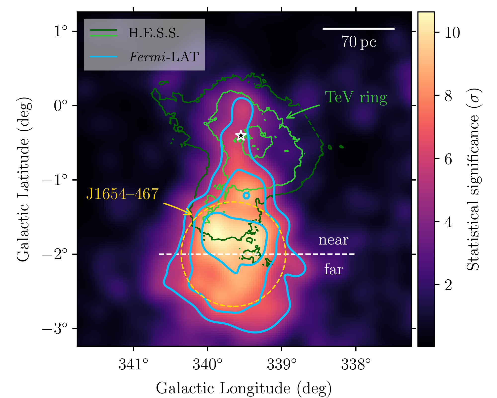
图注：\(\textbf{\fmlat test statistic (TS) map.}\) The colour scale displays $\sqrt{\mathrm{TS}}$, i.e. the statistical significance of a point-like source with a spectrum $\propto E^{-2}$, in the energy range 3\,GeV--3\,TeV. Contour lines at $\sqrt{\mathrm{TS}}=(5, 7, 9)$ are shown in blue. The orange, dashed circle denotes the 1-$\sigma$ radius of the Gaussian source model for \(\outflow.\) Flux contours of the TeV gamma-ray emission measured with \(\hess\) \(\cite{HESS_Wd1_2022}\) at levels of $(1.1/2.3)\times 10^{-8}\,\mathrm{cm}^{-2}\,\mathrm{s}^{-1}\,\mathrm{sr}^{-1}$ are shown in dark and light green, respectively. The star marker indicates the position of \(\wld.\) The white, dashed line separates the \(\outflow\) region into two halves, for which we derive separate spectra (cf.\ Fig.~\ref{fig:sed}). The scale bar assumes a distance to \(\wld\) of 4.14\,kpc \(\cite{Negueruela2022,Navarete2022}.\)
对应解读：对应“建议重点查看的图表”第1、3项，以及“关键图表逐图导读”图1/图3中关于 GeV TS 图、TeV 等值线、Westerlund 1 位置和外流区域的讨论。
入选理由：这是论文核心发现的主图：直接显示 3 GeV--3 TeV Fermi-LAT 显著性分布、GeV 扩展辐射、TeV H.E.S.S. 等值线、星团位置和外流模板半径。它最能支撑日报中关于 GeV 辐射与 TeV 环状辐射空间偏移但相接、以及外流候选区位置关系的解读。
来源与置信度：\(arxiv_source\)；high；\(arxiv_source\) / main.tex:figure[1]
Fig04
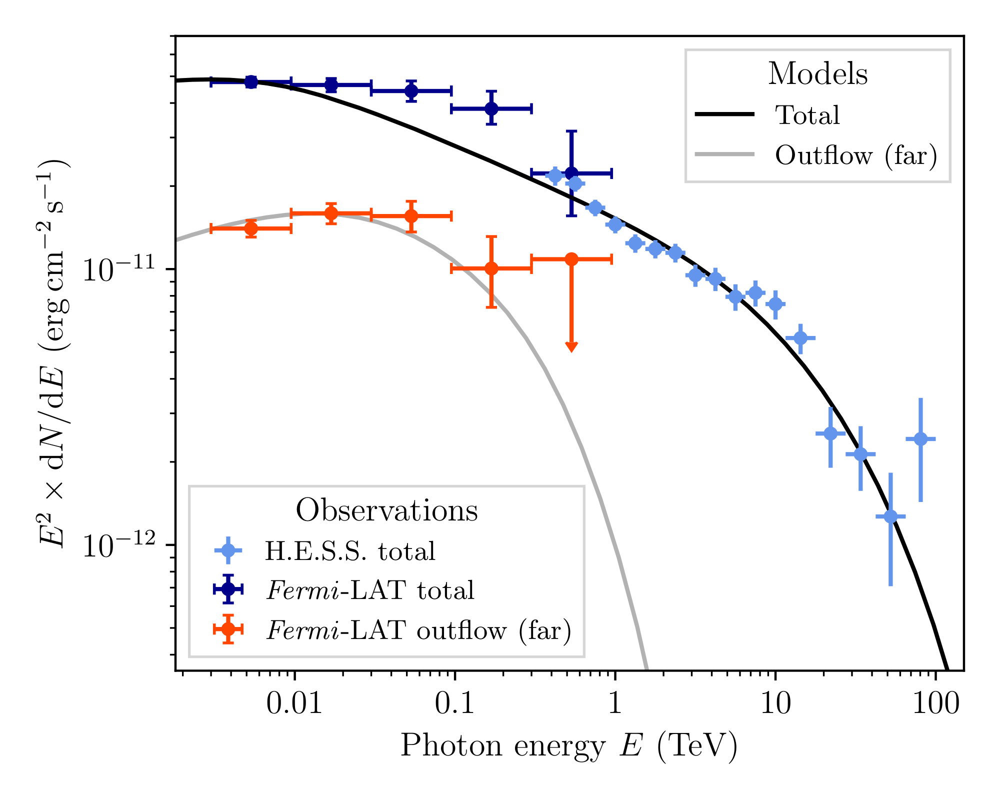
图注：\(\textbf{Spectral energy distribution of the gamma-ray emission.}\) The dark and light blue points show the total flux measured with \(\fmlat\) (from the
TeV ring'' and \outflow) and \(\hess,\) respectively, illustrating the spectral continuity despite the visually different spatial distributions. The black line shows a single-zone IC model for the whole population of electrons accelerated in the superbubble. The red points show the spectrum measured in thefar'' region (cf.\ Fig.~\ref{fig:fermi_ts_map}). Error bars denote 68\% c.l.\ statistical uncertainties; upper limits are at 95\% c.l. The grey line follows from a simple time-dependent model for electrons in this region after 125\,kyr.对应解读：对应“建议重点查看的图表”第4项，以及“关键图表逐图导读”图4/图5中关于 GeV--TeV 谱能量分布、连续谱连接和 IC 辐射模型的讨论。
入选理由：该图给出 Fermi-LAT 与 H.E.S.S. 谱点、统计误差、上限和模型线，是判断 GeV 与 TeV 辐射是否属于连续粒子分布的关键证据。它还包含单区 IC 模型和远端区域的时间依赖电子模型，直接支撑日报中关于电子输运、谱断裂和跨仪器一致性的分析。
来源与置信度：\(arxiv_source\)；high；\(arxiv_source\) / main.tex:figure[4]
Fig03
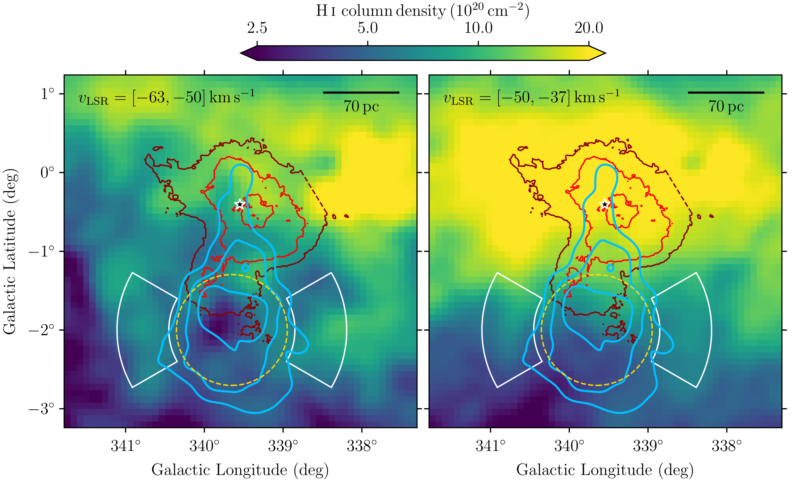
图注：\(\textbf{Atomic (\hone) gas maps of the region around \wld.}\) Data are taken from the Parkes Galactic All-Sky Survey third data release (GASS~III) \(\cite{Kalberla2015}.\) The maps are derived using the optically thin approximation and are shown for the velocity ranges indicated in each panel. \(\fmlat\) GeV emission contours (blue), extent of \(\outflow\) (dashed orange), \(\hess\) TeV flux contours (here red), and position of \(\wld\) (star marker) are the same as in Fig.~\(\ref{fig:fermi_ts_map}.\) The white arc-shaped regions have been used to compute the difference in gas density between the outflow region and its surroundings.
对应解读：对应“建议重点查看的图表”第2、3项，以及“关键图表逐图导读”图2中关于 H I 21 cm 空腔、速度范围和 GeV/TeV/H I 叠加的讨论。
入选理由：这是验证所谓原子氢空腔是否真实存在的主要观测图。不同速度范围的 H I 柱密度图叠加了 GeV 等值线、TeV 等值线、外流范围和星团位置，可直接检查 GeV 辐射是否沿低密度空腔分布，以及空腔边界是否与外流解释相符。
来源与置信度：\(arxiv_source\)；high；\(arxiv_source\) / main.tex:figure[3]
Fig06
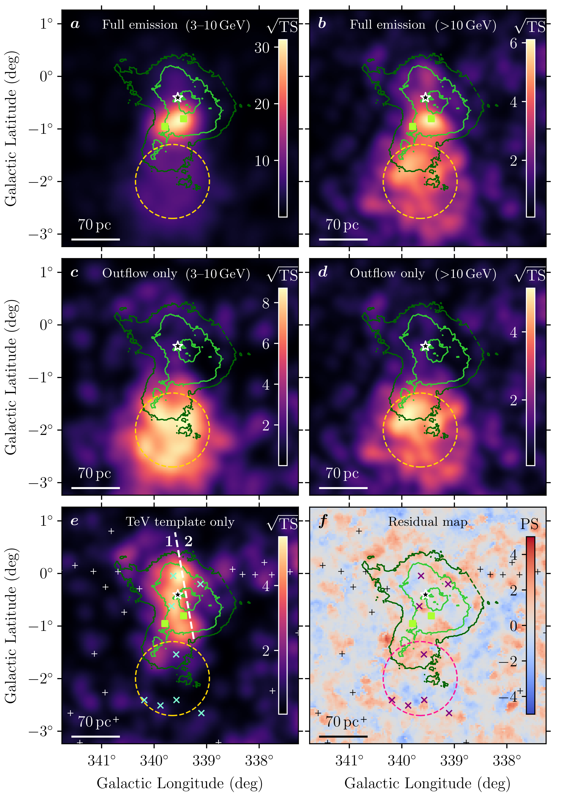
图注：\(\textbf{Additional maps from the \fmlat data analysis.}\) Panels a--e show TS maps (as in Fig.~\ref{fig:fermi_ts_map_suppl}), highlighting different parts of the emission. (a,b): full emission, including that from the two pulsar-associated sources 4FGL~J1648.4$-$4611 and 4FGL~J1650.3$-$4600 (green square markers), in the energy range 3--10\,GeV (a) and $>$10\,GeV (b). (c,d): emission associated with \(\outflow,\) in the energy range 3--10\,GeV (c) and $>$10\,GeV (d). (e): emission surrounding \(\wld,\) associated with the template derived from the TeV emission measured with \(\hess.\) The white dashed line separates the template into two regions for which separate spectra are derived. (f): PS map \(\cite{Bruel2021}\) for the best-fit model including all components. Contour lines and source markers in all panels are the same as those described in Figs.~\(\ref{fig:fermi_ts_map},\)~\(\ref{fig:fermi_ts_map_suppl}.\)
对应解读：对应“建议重点查看的图表”第1、7项，以及“模型拟合”中关于分能段 TS 图、模板分解、点源残差和系统诊断的讨论。
入选理由：该图把 Fermi-LAT 数据按能段和空间模板分解，分别显示全辐射、外流相关辐射、TeV 模板相关辐射以及最佳拟合模型后的 PS map。相比单一发现图，它更适合检查 GeV 外流结构是否在不同能段中保持、是否可能由脉冲星关联源或背景残差造成。
来源与置信度：\(arxiv_source\)；high；\(arxiv_source\) / main.tex:figure[6]
Fig08
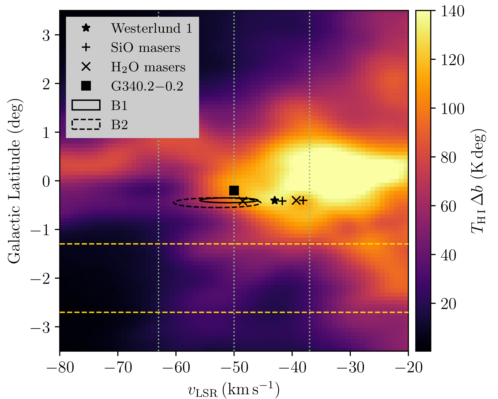
图注：\(\textbf{Velocity-latitude diagram of \hone emission in the region around \wld and \outflow.}\) The \(\hone\) brightness temperatures \(\cite{Kalberla2015}\) are integrated over the $1\sigma$ longitude range of \(\outflow.\) We show the position of \(\wld\) member stars \(\cite{Negueruela2022},\) SiO and H$_2$O masers W~26 and W~237 \(\cite{Fok2012},\) the \(\hii\) region G340.2$-$0.2 \(\cite{Russeil2003},\) and the \(\hone\) bubble-like features B1 and B2 \(\cite{Kothes2007}.\) Dashed horizontal lines show the $1\sigma$ latitude range of \(\outflow.\) Dotted vertical lines show the boundaries of the velocity integration ranges used for column-density maps in our study.
对应解读：对应“建议重点查看的图表”第2、7项，以及“关键图表逐图导读”图2中关于 H I 速度—纬度结构和速度积分范围选择的讨论。
入选理由：该图提供 H I 亮温的速度—纬度诊断，标出 Westerlund 1 成员星、脉泽、H II 区、泡状结构以及本文采用的速度积分边界。它比单纯柱密度图更能检验空腔是否在连续速度结构中成立，避免把视线方向的低柱密度凹陷误读为真实三维外流通道。
来源与置信度：\(arxiv_source\)；high；\(arxiv_source\) / main.tex:figure[8]
Fig09
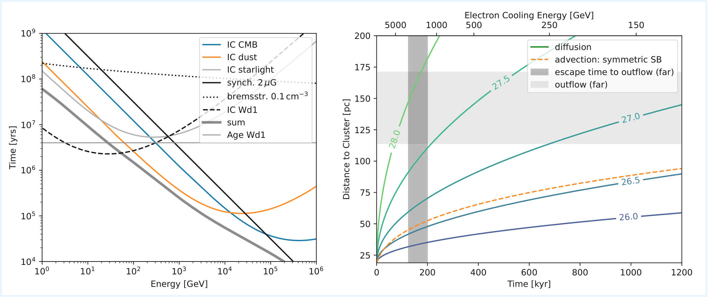
图注：\(\textbf{Cooling and transport timescales.}\) Left: Cooling timescales. Inverse-Compton emission on cluster photon field (IC Wd1) is evaluated at the wind termination shock (20\,pc). The sum only includes components that are relevant at the location of \(\outflow.\) Right: Transport timescales. The coloured solid lines indicate the transport for a range of diffusion coefficients, $D$, and are labelled with $\log_{10} \left( D/\mathrm{cm}^2\,\mathrm{s}^{-1} \right)$. The orange dashed line indicates advection in a spherically symmetric superbubble (SB). The upper abscissa shows the energy of electrons that cool within the time given on the lower abscissa. For further details see the text.
对应解读：对应“模型拟合”中关于电子冷却、扩散/平流输运退化，以及 GeV 远端电子能否从星团传播到外流区域的讨论。
入选理由：该图展示冷却时间和输运时间随能量或扩散系数的关系，是连接观测形态与物理解释的重要辅助图。它不能直接给出宇宙线能量密度，但能检验低能电子是否有足够时间到达 GeV 外流区域、高能电子为何更接近 TeV 发射区，从而支撑论文的外流输运图景。
来源与置信度：\(arxiv_source\)；high；\(arxiv_source\) / main.tex:figure[9]
强相关工作
这篇工作与同类星团/星协伽马射线研究直接相关。最接近的比较对象包括 Cygnus Cocoon、Westerlund 2、30 Doradus C 或 LMC 星形成区、以及此前 H.E.S.S. 对 Westerlund 1 周围扩展 TeV 辐射的研究。这些工作共同指向一个趋势：年轻大质量恒星群体周围存在硬谱、空间扩展的非热粒子群，但不同对象中电子与强子贡献、扩散系数和源年龄仍有明显不确定性。检索关键词可用 “Westerlund 1 HESS TeV gamma-ray extended emission”、“massive star clusters cosmic ray acceleration”、“Cygnus Cocoon Fermi LAT cosmic rays”、“stellar cluster winds gamma rays”。
理论上，它与宇宙线驱动星系风、星团风泡和集体加速模型相连。相反或保守观点通常强调超新星遗迹仍可解释大部分银河宇宙线，星团附近伽马射线可能来自历史超新星、未解析脉冲星风云或弥散背景建模误差，而不必要求星团风持续加速。本文的价值就在于尝试用 H I 空腔和 GeV—TeV 空间谱连续性减少这种歧义，但最终仍需要多对象统计和更高分辨率 TeV/射电观测。检索关键词可用 “cosmic-ray driven galactic winds review”、“collective stellar wind particle acceleration”、“OB association cosmic-ray transport”、“gamma-ray halos around star clusters”。
同一事件 / 同类源线索：
相似工作：
基础理论 / 方法工作：
（未提供）
相反观点 / 张力线索：
（未提供）
说明
评分由 LLM 给出初评，再由本地阈值策略过滤；IACT、TeV 伽马射线和高能中微子天文学按重点方向处理。